Introduction
Consumer Data Right
The Australian Government is introducing a Consumer Data Right (CDR) to give consumers more control over their data.
The CDR will be rolled out sector-by-sector across the economy, starting with the banking sector.
The Government has announced that the energy and telecommunications sectors will follow banking.
Further information on the CDR is available on the Treasury website:
https://treasury.gov.au/consumer-data-right
ACCC's Role
The ACCC will be lead regulator for the CDR regime, and will have roles and functions that include:
- drafting rules to implement and govern the CDR in each sector;
- accrediting entities to receive data;
- managing an online register of accredited data recipients and data holders;
- providing education and guidance on the CDR;
- recommending to government future sectors to be brought within the CDR; and
- compliance and enforcement activities.
Further information on the ACCC’s role in the CDR is available on the ACCC’s website:
https://www.accc.gov.au/focus-areas/consumer-data-right-cdr-0
Data Standards Body
A Data Standards Body (DSB) has been established to develop technical standards to implement the CDR. The work of the DSB is being delivered by a team within Data61, overseen by interim DSB Chair Mr Andrew Stevens, and with industry and consumer advice provided by an Advisory Committee.
Further information on the DSB is available on its website:
https://consumerdatastandards.org.au
Future Dated Obligations
The CDR Register design publishes content, explicitly specified, which will not take effect until a future date or may cease to have effect on some future date. The table below highlights these areas of the standards.
| Section | Description | Applicable Date |
|---|---|---|
| Dynamic Client Registration | Introduces the new metadata field recipient_base_uri used to facilitate the ADR CDR Arrangement Management End Point. This change deprecates the ADR revocation_uri field which becomes optional |
November 2020 |
| Dynamic Client Registration | recipient_base_uri becomes mandatory, revocation_uri field remains optional |
February 2021 |
| Certificate Management | Introduces the ADR CDR Arrangement Revocation End Point which is secured with either a public or ACCC CA issued certificate | November 2020 |
| GetDataRecipients | Updates GetDataRecipients to include the accreditationNumber in the response |
November 2020 |
| Dynamic Client Registration | Introduces the new optional metadata fields sector_identifier_uri, legal_entity_id and legal_entity_name |
July 2021 |
| Dynamic Client Registration | Updates the scopes field to include openid |
July 2021 |
Consultation outline
The ACCC is using this website as a tool to consult on aspects of the design and implementation of the register of CDR participants (the CDR Register). The ACCC is seeking comments from interested stakeholders.
Consultation rules of engagement
The ACCC intends to conduct public consultation on the CDR Register. Questions or comments that participants might ask us via email or private message are likely to be questions or comments other participants have as well. Our answers will be of interest to everyone. There are likely to be experiences and lessons everybody working in this ecosystem can learn from. Having these conversations transparently helps reduce duplication, resolve issues faster and keep everyone up to date with the conversation.
We ask that all contributors to the CDR Register GitHub comply with the GitHub Community Forum Code of Conduct.
In addition, it would be appreciated if the following rules are adhered to when commenting or contributing:
- For transparency, if you work at or are associated with an organisation with an interest in the Consumer Data Right, please indicate this in your response.
- Please ensure you are aware of and compliant with any social media guidelines or internal processes for response set by your organisation before providing feedback.
The ACCC will be actively monitoring and reviewing any comments/responses which are provided, however will not be responding to individual comments. Depending on the number of responses/comments we get, we will assess what the most efficient and effective way to engage with the community is, noting that we want this to be a collaborative effort.
Feedback sought
To guide responses and comments, we are seeking input which will assist us in ensuring that the Register designs meets the needs of the overarching CDR ecosystem. The focus should be on validating the designs, and providing any necessary context and reasoning.
Consumer Data Right Register
The ACCC will perform the role of the CDR Registrar. The CDR Registrar will have the function of maintaining the Register of Accredited Persons (the Register) who have been granted accreditation by the ACCC in its capacity as Data Recipient Accreditor. Accredited persons become Accredited Data Recipients upon receipt of CDR data.
The Register will also include information about Data Holders. Information about Accredited Data Recipients and Data Holders recorded in the Register will be made available to the public in accordance with the CDR rules. Additional information held in the Register will be available to accredited data recipients and data holders.
Ecosystem Entities
CDR consumer
A consumer, as defined in the CDR rules, who is able to a make a request for disclosure of CDR data to themselves or to an accredited data recipient
Data Holder
A person who holds designated CDR data and is required by the CDR rules to disclose product and consumer data
Data Holder Brand
An individual name that is used to collectively identify CDR data sets held by a Data Holder. This will be aligned to, and may or may not be the same as a business name that is registered to the Legal Entity who is the Data Holder
Data Holders would typically have one or more brands within the Consumer Data Right
Accredited Data Recipient
A person that has been granted accreditation by the ACCC and is able to collect, and receives, CDR data about a CDR consumer from a data holder with the consent of the consumer
Accredited Data Recipient Brand
An individual name that is used to collectively identify a set of products and/or services offered by an Accredited Data Recipient. This will be aligned to, and may or may not be the same as a business name that is registered to the Legal Entity who is the Accredited Data Recipient
Data Recipients would typically have one or more brands within the Consumer Data Right
Software Product
Accredited Data Recipients create Software Products which provide consumers the ability to get insight into their data held by Data Holders
Accredited Data Recipients would typically have one or more products within the Consumer Data Right
Entity Relationship Diagram
The following is a logical model of the entities exposed to participants through the Register APIs
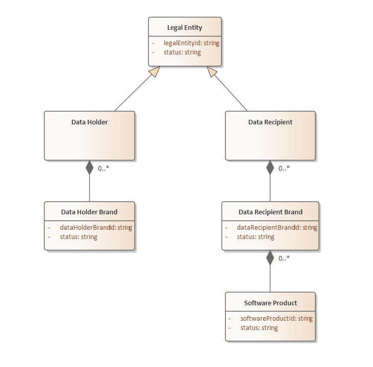
Identifiers
The identifiers outlined in the Ecosystem entities diagram map to Client Registration and APIs defined in this documentation.
| Identifier | Mapping |
|---|---|
| legalEntityId | Identifier in LegalEntityDetail schema returned as part of GetDataHolderBrands API Identifier in RegisterDataRecipient schema returned as part of GetDataRecipients API |
| dataRecipientId | Identifier in DataRecipientStatus schema returned as part of GetDataRecipients API. This is the equivalent to the legalEntityId described above |
| dataHolderBrandId | Identifier in RegisterDataHolderBrands schema returned as part of GetDataHolderBrands API |
| dataRecipientBrandId | org_id claim as defined in the SSA Definition Identifier in DataRecipientsBrandMetaData schema returned as part of GetDataRecipients APIIdentifier used as a parameter to the GetSoftwareStatementAssertion API |
| softwareProductId | software_id claim as defined in the SSA Definition iss claim as defined in the Registration Request Identifier used as a parameter to the GetSoftwareStatementAssertion API |
Ecosystem Component Diagram
The following is a high level overview of the CDR ecosystem outlining the components and API endpoints each participant within the ecosystem will be expected to implement.
Note that ADRs are expected to have one or more Software Products consuming CDR data.
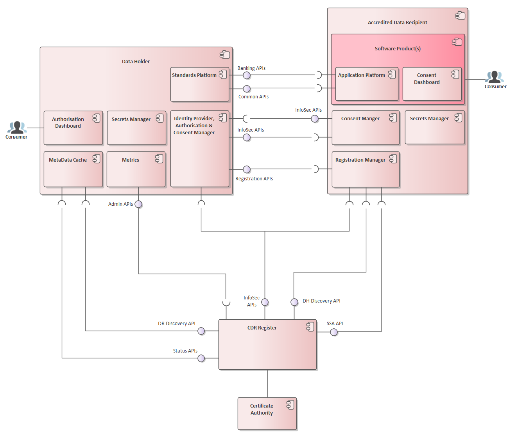
Data Holder
| Component | Responsibility |
|---|---|
| Identity Provider | Provides identity services to the Data Holder’s platform for identifying Accredited Data Recipients and the CDR Register |
| Authorisation and Consent Manager | Provides authorisation functionality to the consumer including consent withdrawal propagation to the relevant Accredited Data Recipients |
| Secrets Manager | Provides key management for issuance/rotation of JWKs & certificates and storing of authorisations |
| Standards Platform | Exposes banking, consumer and product data to Accredited Data Recipients as per the Consumer Data Standards Banking APIs and Common APIs |
| MetaData Cache | Cache of discovered Accredited Data Recipients and their associated Software Products within the CDR ecosystem. Caching rules and logic are described at: Metadata Cache Management |
| Metrics | Facilitates Get Metrics requests from the ACCC Register as per the Consumer Data Standards Get Metrics |
| Authorisation Dashboard | The Dashboard provided to the consumer to view their current sharing authorisations with the Data Holder. The dashboard also provides the functionality to explicitly withdraw these authorisations with this Data Holder. Details can be found in the CX Guidelines |
| API | Responsibility |
|---|---|
| Banking APIs | APIs exposing banking data as per the Consumer Data Standards Banking APIs |
| Common APIs | APIs exposing common data as per the Consumer Data Standards Common APIs |
| InfoSec APIs | APIs exposing endpoints to facilitate the InfoSec profile as per the Consumer Data Standards Endpoints |
| Registration APIs | APIs exposing dynamic registration endpoints as described at Dynamic Client Registration |
| Admin APIs | APIs exposing metrics data as per the Consumer Data Standards Admin APIs |
Accredited Data Recipient
| Component | Responsibility |
|---|---|
| Software Application(s) | One or more consumer facing applications provided by the Accredited Data Recipient |
| Application Platform | Accredited Data Recipient’s application platform which requests consumer and product data from Data Holders as per the Consumer Data Standards Banking APIs and Common APIs |
| Consent Manager | Provides consent functionality to the consumer including consent withdrawal propagation to the relevant Data Holder |
| Secrets Manager | Provides key management for issuance/rotation of JWKS & certificates and storing of consents |
| MetaData Cache | Cache of discovered Data Holders within the CDR ecosystem. Caching rules and logic are described at: Metadata Cache Management |
| Consent Dashboard | The Dashboard provided to the consumer to view the consents given to this Accredited Data Recipient to collect and use CDR data. The Dashboard also provides the functionality to explicitly withdraw these consents with this Accredited Data Recipient. Details can be found in the CX Guidelines |
| API | Responsibility |
|---|---|
| InfoSec APIs | APIs exposing endpoints to facilitate the InfoSec profile as per the Consumer Data Standards Endpoints. This covers the revocation and CDR arrangement management endpoints, to facilitate bi-directional consent revocation as well as the Data Recipient JWKS endpoint |
Register
The Register exposed APIs to satisfy the following main requirements:
1. Facilitates discovery of Data Holders and their endpoint details within the CDR regime 2. Facilitates discovery of Data Recipient details within the CDR regime 3. Provides SSAs to facilitate Dynamic Client Registration 4. Provides public JWKS to assert SSAs are trusted by the CDR Register 5. Collect ecosystem metrics from participating Data Holders as per the Consumer Data Standards Get Metrics
| API | Responsibility |
|---|---|
| Discovery APIs (DH & DR) | APIs exposing the discovery of Data Holder Brands and Data Recipients within the CDR regime. APIs are described at: GetDataHolderBrands, GetDataRecipients |
| Status APIs | APIs exposing the statuses of Accredited Data Recipients and associated Software Products within the CDR regime. APIs are described at: GetDataRecipientsStatus, GetSoftwareProductsStatus |
| SSA API | API exposing the retrieval of SSAs used by Accredited Data Recipients to register with Data Holders within the CDR regime. API is described at: GetSoftwareStatementAssertion |
| InfoSec APIs | API exposing endpoints to facilitate OIDC as well as exposing Register public JWKS used to verify the signature of SSA payloads. Further details are available at: Dynamic Client Registration |
Certificate Authority
The CDR Register will be using DigiCert as the ACCC endorsed Certificate Authority. Further details on certificate management can be found at: Certificate Management
Intermediaries
The CDR Register design accommodates intermediaries within the CDR ecosystem.
Collection Arrangements
Collection arrangements allow for outsourced service providers (’provider’) that are accredited to collect CDR data on behalf of another accredited person (‘principal’). An ‘outsourcing arrangement’ as provided for in the rules will need to be in place between the provider and the principal.
For a reference on how these rules may be implemented, a technical commentary has been published on the CDR Support Portal
Responsibilities
The process of collecting consumer data involves a number of functions. Collection arrangements allow for the responsibilities of these to be assigned to either the provider or principal.
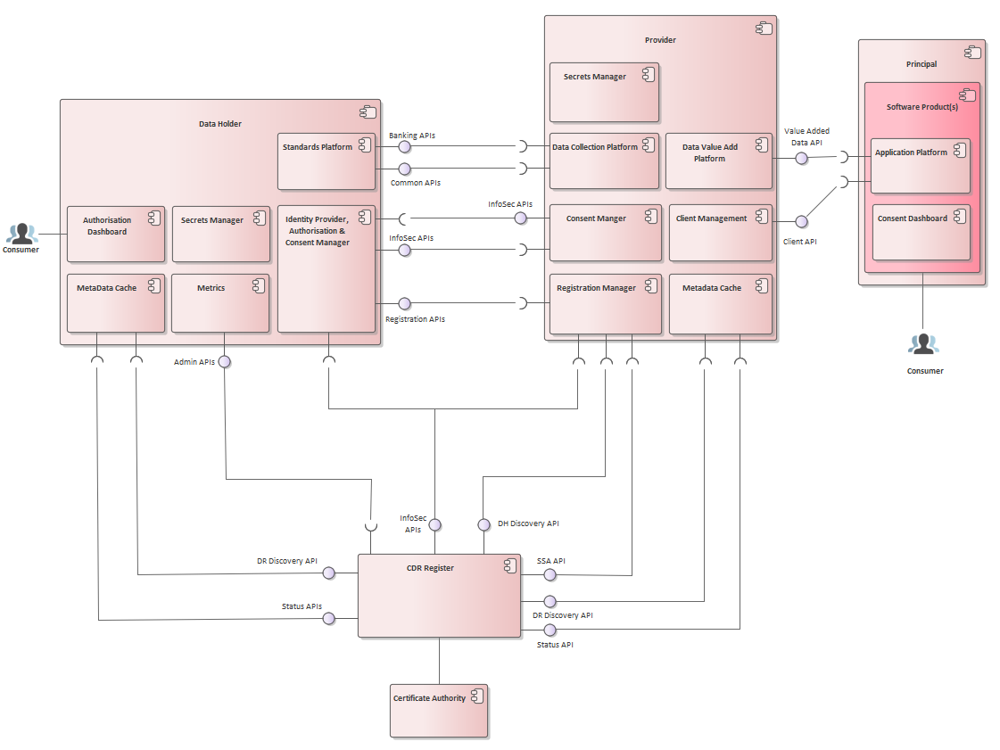
This diagram models how the scope of responsibilities MAY be split between a principal and a provider collecting on the principal’s behalf. A subset of the principal’s responsibilities can therefore be handled by the provider, allowing them to:
- specialise in the security and functional requirements of participating in the CDR; and
- achieve economies of scale when becoming multi-tenanted and servicing multiple principals in the ecosystem.
Authentication with the CDR Register
Authentication with the Register has been enhanced to allow authentication using the data_recipient_brand_id to alternatively authenticating with the software_product_id.
This change allows the provider to have the capability to maintain the software product and associated registrations on behalf of an accredited data recipient principal.
Please refer to the Client Authentication section for further details.
Accreditation Status Discovery
The status of a software product, managed within a collection arrangement, will be coupled to the accreditation status of both the principal and provider in this arrangement.
To achieve this, cascade rules for software product statuses, as defined in Status Mapping, will be defined for a collection arrangement as follows:
| Provider Status | Principal Status | Cascaded Principal SP Status |
|---|---|---|
| Active | Active | Active |
| Suspended | Active | Inactive |
| Revoked | Active | Inactive |
| Surrendered | Active | Inactive |
| Any | Suspended | Inactive |
| Any | Revoked | Removed |
| Any | Surrendered | Removed |
Client Registration
Dynamic Client Registration
Accredited Data Recipient Software Products within the Consumer Data Right will dynamically register with one or more Data Holders, to obtain client credentials used to retrieve consumer data on behalf of a consumer.
The CDR Registration model follows standard [RFC7591] and is derived from Open Banking UK model with design input from the ABA
Pre-Requisites: Prior to Client Registration, the registering Data Recipient must be accredited and the associated Software Product must be configured within the CDR Register
Software Statement Assertion (SSA) Design
A Software Statement is defined in [RFC7591] as: A digitally signed JSON Web Token (JWT) [RFC7519] that asserts metadata values about the client software
Within the Consumer Data Right, the CDR Register will issue Software Statements for Accredited Data Recipient Software Products
The trust relationship the authorization server has with the issuer of the software statement is to be used as an input to the evaluation of whether the registration request is accepted.
A software statement is presented by Accredited Data Recipient’s Software Product to Data Holder’s authorisation server as part of a client registration request.
An SSA will be issued for each active Software Product and is retrievable using the CDR Register GetSoftwareStatementAssertion API
Namespacing
The design will conform to [RFC7591] and will not use the software namespace convention as used in the Open Banking UK Dynamic Registration Standard
Digital Signing Algorithm
Conforming to [FAPI-RW], SSAs will be signed on the CDR Register using PS256
SSA Lifetime
| Method | Lifetime (mins) | Notes |
|---|---|---|
| Obtain via API | 10 | The intention here is this should be sufficient time to batch register with all relevant Data Holders |
SSA Definition
Example SSA:
eyJhbGciOiJQUzI1NiIsImtpZCI6ImI4ZmFjZjJmZjM5NDQ0Zjc4MWUwYmU1ZGI0YjE0ZjE2IiwidHlwIjoiSldUIn0.ew0KICAiaXNzIjogImNkci1yZWdpc3RlciIsDQogICJpYXQiOiAxNTcxODA4MTY3LA0KICAiZXhwIjogMjE0NzQ4MzY0NiwNCiAgImp0aSI6ICIzYmMyMDVhMWViYzk0M2ZiYjYyNGIxNGZjYjI0MTE5NiIsDQogICJvcmdfaWQiOiAiM0IwQjBBN0ItM0U3Qi00QTJDLTk0OTctRTM1N0E3MUQwN0M4IiwNCiAgIm9yZ19uYW1lIjogIk1vY2sgQ29tcGFueSBJbmMuIiwNCiAgImNsaWVudF9uYW1lIjogIk1vY2sgU29mdHdhcmUiLA0KICAiY2xpZW50X2Rlc2NyaXB0aW9uIjogIkEgbW9jayBzb2Z0d2FyZSBwcm9kdWN0IGZvciB0ZXN0aW5nIFNTQSIsDQogICJjbGllbnRfdXJpIjogImh0dHBzOi8vd3d3Lm1vY2tjb21wYW55LmNvbS5hdSIsDQogICJyZWRpcmVjdF91cmlzIjogWw0KICAgICJodHRwczovL3d3dy5tb2NrY29tcGFueS5jb20uYXUvcmVkaXJlY3RzL3JlZGlyZWN0MSIsDQogICAgImh0dHBzOi8vd3d3Lm1vY2tjb21wYW55LmNvbS5hdS9yZWRpcmVjdHMvcmVkaXJlY3QyIg0KICBdLA0KICAibG9nb191cmkiOiAiaHR0cHM6Ly93d3cubW9ja2NvbXBhbnkuY29tLmF1L2xvZ29zL2xvZ28xLnBuZyIsDQogICJ0b3NfdXJpIjogImh0dHBzOi8vd3d3Lm1vY2tjb21wYW55LmNvbS5hdS90b3MuaHRtbCIsDQogICJwb2xpY3lfdXJpIjogImh0dHBzOi8vd3d3Lm1vY2tjb21wYW55LmNvbS5hdS9wb2xpY3kuaHRtbCIsDQogICJqd2tzX3VyaSI6ICJodHRwczovL3d3dy5tb2NrY29tcGFueS5jb20uYXUvandrcyIsDQogICJyZXZvY2F0aW9uX3VyaSI6ICJodHRwczovL3d3dy5tb2NrY29tcGFueS5jb20uYXUvcmV2b2NhdGlvbiIsDQogICJzb2Z0d2FyZV9pZCI6ICI3NDBDMzY4Ri1FQ0Y5LTREMjktQTJFQS0wNTE0QTY2QjBDREUiLA0KICAic29mdHdhcmVfcm9sZXMiOiAiZGF0YS1yZWNpcGllbnQtc29mdHdhcmUtcHJvZHVjdCIsDQogICJzY29wZSI6ICJiYW5rOmFjY291bnRzLmJhc2ljOnJlYWQgYmFuazphY2NvdW50cy5kZXRhaWw6cmVhZCBiYW5rOnRyYW5zYWN0aW9uczpyZWFkIGJhbms6cGF5ZWVzOnJlYWQgYmFuazpyZWd1bGFyX3BheW1lbnRzOnJlYWQgY29tbW9uOmN1c3RvbWVyLmJhc2ljOnJlYWQgY29tbW9uOmN1c3RvbWVyLmRldGFpbDpyZWFkIg0KfQ.ZNKe8aBHcsZ_OfdP0GvUa0AHrjcoC0Coky4jQHrPsRoG3YMcS2XG9JtyB5zq-AMOQoaib1Ijx1m7B-JOEbVcnNJcLUZeVEIwnP8hRssAnGjWwaYGUAiY-DEFUsuXqpQWgyIOFz84W-FaHFcqpOSGxjGmjICZU9S1Pl4o8b5poA_kJ2n_wdiOBUG4xl3uXqzK_vstcGXbAubFyLhjOxhc_rqONO2NCtpyCwj83Zqi7Ve_A27-ty5N0AQa2xYWvjDt_Xh8xcxRI_ih7_sStvDTTy3gtyX5bAdXsDsweCcvN0d2vOCpm6-dnr8D1fXDTnlT3x2uQ0XAysWr6wU4mAZFVA
Associated JWKS:
{
"keys": [
{
"kid": "b8facf2ff39444f781e0be5db4b14f16",
"kty": "RSA",
"key_ops": [
"sign",
"verify"
],
"n": "s0zGoaOEJE8HDfHjWtO0xLXtuPcwio8BEoj0-uu9kxxDIF7jH0jb06EwoPkb83BET59x6C0TtRfc_I5ZDksQKRClWXzbazqi62M5YhCgwyB-S09PJb8P1GfQBYyK346nLKARHbFJ1t1SHARcVFJA_8NeHfQn_0fyEc55R3GGNDL3YQtjEoTb-LMR-KpcPB2BpyDuie-jk-3f1t0EfvnkVp-6co1_KTXrbwuYtH31YBZLgU4JeZEJLTnGdMKmJppZ9SnyrBB461hMmw0HJHJj6uZJSiP2onmvlrUezv1T3NM3HOE7WHxlps9MUJj3vcpea-O6n5JBX8emTduLuLuKuw",
"e": "AQAB"
}
]
}
Decoded SSA
{
"alg": "PS256",
"kid": "b8facf2ff39444f781e0be5db4b14f16",
"typ": "JWT"
}
{
"iss": "cdr-register",
"iat": 1571808167,
"exp": 2147483646,
"jti": "3bc205a1ebc943fbb624b14fcb241196",
"legal_entity_id": "3B0B0A7B-3E7B-4A2C-9497-E357A71D07C7",
"legal_entity_name": "Mock Company Inc.",
"org_id": "3B0B0A7B-3E7B-4A2C-9497-E357A71D07C8",
"org_name": "Mock Company Brand",
"client_name": "Mock Software",
"client_description": "A mock software product for testing SSA",
"client_uri": "https://www.mockcompany.com.au",
"redirect_uris": [
"https://www.mockcompany.com.au/redirects/redirect1",
"https://www.mockcompany.com.au/redirects/redirect2"
],
"sector_identifier_uri": "https://www.mockcompany.com.au/sector_identifier",
"logo_uri": "https://www.mockcompany.com.au/logos/logo1.png",
"tos_uri": "https://www.mockcompany.com.au/tos.html",
"policy_uri": "https://www.mockcompany.com.au/policy.html",
"jwks_uri": "https://www.mockcompany.com.au/jwks",
"revocation_uri": "https://www.mockcompany.com.au/revocation",
"recipient_base_uri": "https://www.mockcompany.com.au",
"software_id": "740C368F-ECF9-4D29-A2EA-0514A66B0CDE",
"software_roles": "data-recipient-software-product",
"scope":
"openid
bank:accounts.basic:read
bank:accounts.detail:read
bank:transactions:read
bank:payees:read
bank:regular_payments:read
common:customer.basic:read
common:customer.detail:read
cdr:registration"
}
| Client Metadata | Required | Modifiable | Description |
|---|---|---|---|
| iss | Required | Contains the iss (issuer) claim denoting the party attesting to the claims in the software statementvalue: "cdr-register" |
|
| iat | Required | The time at which the request was issued by the CDR Register, expressed as seconds since 1970-01-01T00:00:00Z as measured in UTC | |
| exp | Required | The time at which the SSA expires expressed as seconds since 1970-01-01T00:00:00Z as measured in UTC | |
| jti | Required | Unique identifier for the JWT, used to prevent reuse of the SSA. | |
| org_id | Required | A unique identifier string assigned by the CDR Register that identifies the Accredited Data Recipient Brand | |
| org_name | Required | Human-readable string name of the Accredited Data Recipient Brand to be presented to the end user during authorization | |
| client_name | Required | Human-readable string name of the software product to be presented to the end-user during authorization | |
| client_description | Required | Human-readable string name of the software product description to be presented to the end user during authorization | |
| client_uri | Required | URL string of a web page providing information about the client | |
| redirect_uris | Required | Array of redirection URI strings for use in redirect-based flows | |
| logo_uri | Required | URL string that references a logo for the client software product. The server SHOULD display this image to the end-user during approval | |
| tos_uri | Optional | URL string that points to a human-readable terms of service document for the Software Product | |
| policy_uri | Optional | URL string that points to a human-readable policy document for the Software Product | |
| jwks_uri | Required | URL string referencing the client's JSON Web Key (JWK) Set [RFC7517] document, which contains the client's public keys | |
| revocation_uri | Required | URI string that references the location of the Software Product consent revocation endpoint as per Consumer Data Standards Endpoints | |
| recipient_base_uri | Required | Base URI for the Consumer Data Standard data recipient endpoints. This should be the base to provide reference to all other Data Recipient Endpoints Scheduled for Nov 2020 | |
| software_id | Required | String representing a unique identifier assigned by the ACCC Register and used by registration endpoints to identify the software product to be dynamically registered. The software_id will remain the same across multiple updates or versions of the same piece of software.The software_id should be used as the primary external identifier for the client to prevent duplicate client registrations |
|
| software_roles | Required | String containing a role of the software in the CDR Regime. Initially the only value used with be “data-recipient-software-product” | |
| scope | Required | String containing a space-separated list of scope values that the client can use when requesting access tokens. These CDS scope values are defined at: Authorisation ScopesThe DCR scope value is defined at: Client Registration Management |
Nov 2020: the
revocation_uribecomes optional andrecipient_base_uriwill be introduced as requiredFeb 2021: the
revocation_uriremains optional andrecipient_base_uriwill remain requiredDeprecation of the
revocation_urifrom the SSA will be planned for a future release of the CDR Register design
| Client Metadata | Required | Modifiable | Description |
|---|---|---|---|
| iss | Required | Contains the iss (issuer) claim denoting the party attesting to the claims in the software statementvalue: "cdr-register" |
|
| iat | Required | The time at which the request was issued by the CDR Register, expressed as seconds since 1970-01-01T00:00:00Z as measured in UTC | |
| exp | Required | The time at which the SSA expires expressed as seconds since 1970-01-01T00:00:00Z as measured in UTC | |
| jti | Required | Unique identifier for the JWT, used to prevent reuse of the SSA. | |
| legal_entity_id | Optional | A unique identifier string assigned by the CDR Register that identifies the Accredited Data Recipient Legal Entity Scheduled for July 2021 | |
| legal_entity_name | Optional | Human-readable string name of the Accredited Data Recipient Legal Entity Scheduled for July 2021 | |
| org_id | Required | A unique identifier string assigned by the CDR Register that identifies the Accredited Data Recipient Brand | |
| org_name | Required | Human-readable string name of the Accredited Data Recipient Brand to be presented to the end user during authorization | |
| client_name | Required | Human-readable string name of the software product to be presented to the end-user during authorization | |
| client_description | Required | Human-readable string name of the software product description to be presented to the end user during authorization | |
| client_uri | Required | URL string of a web page providing information about the client | |
| redirect_uris | Required | Array of redirection URI strings for use in redirect-based flows | |
| sector_identifier_uri | Optional | URL string referencing the client's sector identifier URI, used as an optional input to the Pairwise Identifier as described in described in section 8 of [OIDC]. Scheduled for July 2021 | |
| logo_uri | Required | URL string that references a logo for the client software product. The server SHOULD display this image to the end-user during approval | |
| tos_uri | Optional | URL string that points to a human-readable terms of service document for the Software Product | |
| policy_uri | Optional | URL string that points to a human-readable policy document for the Software Product | |
| jwks_uri | Required | URL string referencing the client's JSON Web Key (JWK) Set [RFC7517] document, which contains the client's public keys | |
| revocation_uri | Required | URI string that references the location of the Software Product consent revocation endpoint as per Consumer Data Standards Endpoints | |
| recipient_base_uri | Required | Base URI for the Consumer Data Standard data recipient endpoints. This should be the base to provide reference to all other Data Recipient Endpoints | |
| software_id | Required | String representing a unique identifier assigned by the ACCC Register and used by registration endpoints to identify the software product to be dynamically registered. The software_id will remain the same across multiple updates or versions of the same piece of software.The software_id should be used as the primary external identifier for the client to prevent duplicate client registrations |
|
| software_roles | Required | String containing a role of the software in the CDR Regime. Initially the only value used with be “data-recipient-software-product” | |
| scope | Required | String containing a space-separated list of scope values that the client can use when requesting access tokens. These CDS scope values are defined at: Authorisation ScopesThe DCR scope value is defined at: Client Registration Management |
July 2021: the
sector_identifier_uriis introduced as optionalJuly 2021: the
legal_entity_idandlegal_entity_nameare introduced as optional
Client Registration Considerations
The CDR Register will only issue SSAs for Software Products which are currently in the Active state
Sector Identifiers
As per the Consumer Data Standards, the Pairwise Pseudonym Identifier (PPD) as described in section 8 of [OIDC], will use the host component of the redirect_uris as the sector identifier. This introduces a constraint that the redirect_uris must all contain the same hostname.
The CDR Register registration design will introduce support for the sector_identifier_uri in the July 2021 release. Adoption will require Data Holder implementation and updates to Software Product registrations optionally moving from redirect_uris to utilising the sector_identifier_uri
Logos
Logos will be incorporated within the SSA to ensure there is consistency between the logos published on the Public Register and those passed to Data Holders as part of Registration
CDR Register SSA Signing
- SSAs will be signed by the Register
- Register public keys will be exposed on a dedicated JWKS URI endpoint
- CDR Register JWKS will be exposed on an unauthenticated endpoint, using TLS. This allows for distribution via CDN, increasing tolerance for Register outage
- Endpoint details will be provided to participants during the onboarding process
Registration Request using JWT
Example Request
HTTP/1.1 POST /register
Content-Type: application/jwt
Accept: application/json
## Non-normative Decoded JWT
{
"alg":"PS256",
"typ":"JWT",
"kid":"12456"
}
{
"iss":"CDR Software Product ID",
"iat":1571808167,
"exp":2147483646,
"jti":"37747cd1c10545699f754adf28b73e31",
"aud":"https://secure.api.dataholder.com/issuer",
"redirect_uris":[
"https://www.mockcompany.com.au/redirects/redirect1",
"https://www.mockcompany.com.au/redirects/redirect2"
],
"token_endpoint_auth_signing_alg":"PS256",
"token_endpoint_auth_method":"private_key_jwt",
"grant_types":[
"client_credentials",
"authorization_code",
"refresh_token"
],
"response_types":["code id_token"],
"application_type":"web",
"id_token_signed_response_alg":"PS256",
"id_token_encrypted_response_alg":"RSA-OAEP",
"id_token_encrypted_response_enc:"A256GCM",
"request_object_signing_alg":"PS256",
"software_statement":…
}
{
"signature":...
}
To register a Software Product with a Data Holder, the Accredited Data Recipient sends an HTTP POST to the Data Holder registration endpoint.
The request MUST be presented in the format of a [RFC7519] compliant JWT. The request MUST use the HTTP POST method, using the application/jwt content type.
The JWT MUST be signed using algorithms specified in section 8.6 of [FAPI-RW]
The client registration request MUST contain the following claims in the JWT payload unless designated as Optional
| Claim | Required | Description |
|---|---|---|
| iss | Required | Contains the identifier for the ADR Software Product (SoftwareProductId) as defined in the CDR Register |
| iat | Required | The time at which the request was issued by the Data Recipient expressed as seconds since 1970-01-01T00:00:00Z as measured in UTC |
| exp | Required | The time at which the request expires expressed as seconds since 1970-01-01T00:00:00Z as measured in UTC |
| jti | Required | Unique identifier for the JWT, used to prevent reuse of the token. |
| aud | Required | Contains the DH issuer value as described in the OIDC Discovery Document |
| redirect_uris | Optional | Array of redirection URI strings for use in redirect-based flows. If used, redirect_uris MUST match or be a subset of the redirect_uris as defined in the SSA |
| token_endpoint_auth_method | Required | The requested authentication method for the token endpoint. The only supported method will be private_key_jwt |
| token_endpoint_auth_signing_alg | Required | The algorithm used for signing the JWT |
| grant_types | Required | Array of OAuth 2.0 grant type strings that the client can use at the token endpoint. Supported values: [client_credentials, authorization_code, refresh_token] |
| response_types | Required | Array of the OAuth 2.0 response type strings that the client can use at the authorization endpoint. value: [code id_token] |
| application_type | Optional | Kind of the application. The only supported application type will be web |
| id_token_signed_response_alg | Required | Algorithm with which an id_token is to be signedSupported values as constrained by [FAPI-RW] |
| id_token_encrypted_response_alg | Required | JWE alg algorithm with which an id_token is to be encrypted |
| id_token_encrypted_response_enc | Required | JWE enc algorithm with which an id_token is to be encrypted |
| request_object_signing_alg | Optional | Algorithm which the ADR expects to sign the request object if a request object will be part of the authorization request sent to the Data HolderSupported values as constrained by [FAPI-RW] |
| software_statement | Required | Software statement assertion issued by the CDR Register |
ID Token Algorithm Selection Considerations
ID Token algorithms currently being applied in the ecosystem include:
| Claim | Values |
|---|---|
| id_token_encrypted_response_alg | RSA-OAEPRSA-OAEP-256 |
| id_token_encrypted_response_enc | A256GCMA128CBC-HS256 |
Registration Validation
Validation and use of the JWT and the claims described above MUST be performed in accordance with JWT
Validation of the SSA software_id and the associated software status is not required as the SSA will have been issued and signed by the CDR Register
Each software_id issued by the CDR Register should only be registered on each Data Holder Brand IDP once. Multiple registrations per software_id are NOT permitted
Registration Response
Example Created Response
HTTP/1.1 201 Created
Content-Type: application/json
{
"client_id": "2cfefa98-7d4a-4bcb-95da-47063b84d410",
"client_id_issued_at": 1574398823,
"redirect_uris": [
"https://www.mockcompany.com.au/redirects/redirect1",
"https://www.mockcompany.com.au/redirects/redirect2"
],
"token_endpoint_auth_signing_alg":"PS256",
"token_endpoint_auth_method":"private_key_jwt",
"grant_types":[
"client_credentials",
"authorization_code",
"refresh_token"
],
"response_types":["code id_token"],
"application_type":"web",
"id_token_signed_response_alg":"PS256",
"id_token_encrypted_response_alg":"RSA-OAEP",
"id_token_encrypted_response_enc:"A256GCM",
"request_object_signing_alg":"PS256",
"software_statement":"…",
"legal_entity_id": "3B0B0A7B-3E7B-4A2C-9497-E357A71D07C7",
"org_id": "3B0B0A7B-3E7B-4A2C-9497-E357A71D07C8",
"org_name": "Mock Company Inc.",
"client_name": "Mock Software",
"client_description": "A mock software product for testing SSA",
"client_uri": "https://www.mockcompany.com.au",
"logo_uri": "https://www.mockcompany.com.au/logos/logo1.png",
"tos_uri": "https://www.mockcompany.com.au/tos.html",
"policy_uri": "https://www.mockcompany.com.au/policy.html",
"jwks_uri": "https://www.mockcompany.com.au/jwks",
"revocation_uri": "https://www.mockcompany.com.au/revocation",
"recipient_base_uri": "https://www.mockcompany.com.au",
"sector_identifier_uri": "https://www.mockcompany.com.au/sector_identifier"
"software_id": "740C368F-ECF9-4D29-A2EA-0514A66B0CDE",
"software_roles": "data-recipient-software-product",
"scope":
"openid
bank:accounts.basic:read
bank:accounts.detail:read
bank:transactions:read
bank:payees:read
bank:regular_payments:read
common:customer.basic:read
common:customer.detail:read
cdr:registration"
}
On successful registration, the response MUST be returned to the Accredited Data Recipient conforming to Section 3.2.1 of [RFC7591]
| Claim | Required | Description |
|---|---|---|
| client_id | Required | Contains the dynamically generated identifier for the ADR Software Product issued by the Data Holder |
| client_id_issued_at | Optional | Time at which the client identifier was issued |
As per Section 3.2.1 of [RFC7591], additionally, the authorisation server MUST return all registered metadata about this client, including any fields provisioned by the authorisation server itself
The Software Statement value MUST be returned unmodified. Client metadata elements used from the software statement MUST also be returned directly as top-level client metadata values in the registration response
Any additional claims MUST be ignored and not returned on completion of the request
Registration Errors
Example Error Response
HTTP/1.1 400 Bad Request
Content-Type: application/json
{
"error": "invalid_software_statement",
"error_description": "Duplicate registrations for a given software_id are not valid"
}
When an error condition occurs during a registration request, the response MUST be returned to the Accredited Data Recipient conforming to Section 3.2.2 of [RFC7591]
Duplicate registrations are not permitted so attempts to create a registration which already exists MUST return an HTTP 400 error
Registration error responses schemas are defined in the API Documentation
For those Registration errors which do not map to Section 3.2.2 of [RFC7591], HTTP Response Codes in the Consumer Data Standards should be used.
Client Registration Management
Registration API Endpoints
Data Holder Authorisation Servers must expose the following Client Registration Management endpoints
| HTTP Verb | Auth Server Support | TLS-MA | HoK | Grant Type | Access Token Scope |
|---|---|---|---|---|---|
| POST /register | Required | N/A | None | ||
| GET /register/{clientID} | Required | Client Credentials | cdr:registration | ||
| PUT /register/{clientID} | Required | Client Credentials | cdr:registration | ||
| DELETE /register/{clientID} | Optional | Client Credentials | cdr:registration |
Please refer to API documentation for further examples
- During registration management requests, Data Holders must validate the scope of access tokens provided matches
cdr:registration - Registration endpoints will be exposed in the OIDC Discovery Configuration Endpoint, as described in the Consumer Data Standards
Authorisation Server
Non-Normative Example for access token retrieval
HTTP/1.1 POST /token
Content-Type: application/x-www-form-urlencoded
grant_type=client_credentials&
scope=cdr%3Aregistration&
client_assertion_type=urn%3Aietf%3Aparams%3Aoauth%3Aclient-assertion-type%3Ajwt-bearer&
client_assertion=eyJhbGciOiJQUzI1NiIsInR5cCI6IkpXVCIsImtpZCI6IjEyNDU2In0.ey ...
## Decoded client assertion JWT
{
"alg": "PS256",
"typ": "JWT",
"kid": "12456"
}
{
"iss": "12345",
"sub": "12345",
"iat": 1516239022,
"exp": 1516239322,
"aud": "https://www.holder.com.au/token",
"jti": "37747cd1-c105-4569-9f75-4adf28b73e31"
}
Token Endpoint Authentication
The Accredited Data Recipient MUST use the private_key_jwt client authentication method with the client_credentials grant to authenticate with the Data Holder token endpoint
Access Token Separation of Duties
Access tokens issued for consuming CDR Data should not be used for client registration maintenance and vice-versa
ADRs should ensure they only use access tokens with the scope cdr:registration for client registration maintenance tasks and CDR Authorisation Scopes for consuming CDR data
Registration Transaction Security
DCR API endpoints will conform to the same transaction security requirements as Data Holder Resource endpoints Please refer to the Consumer Data Standards Transaction Security for Transaction Security details
Registration Flows
The following sequence diagrams outline the responsibilities for each party during the dynamic client registration processes.
Create Registration
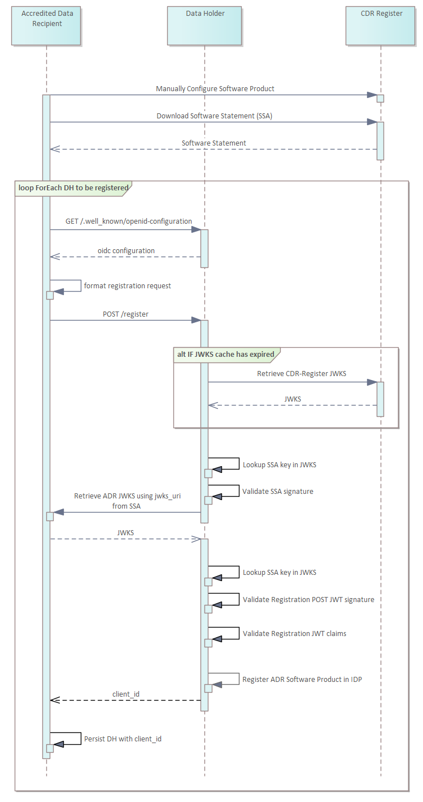
Modify Registration
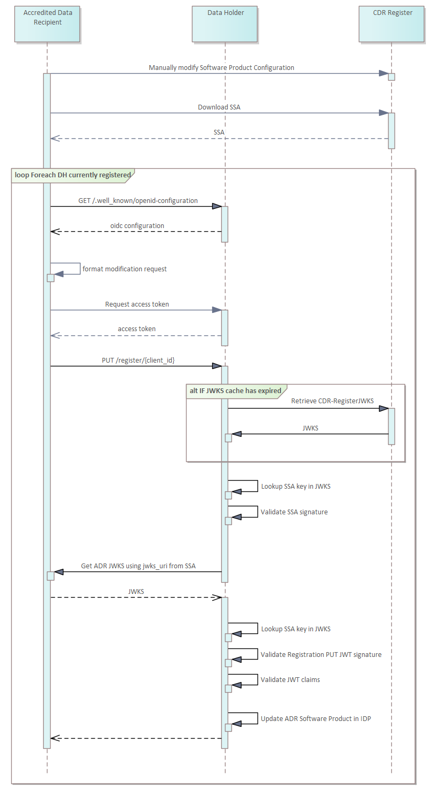
Software Product Configuration is a manual process performed via the CDR Participant Portal. Information on this process will be provided during onboarding
Registration request details are described at: registration-request-using-jwt
Participant Statuses
Accredited Data Recipient and Software Product Statuses
The accreditation status of Accredited Data Recipients, and the status of their associated software products, may traverse through multiple statuses in the CDR as a result of decisions by the ACCC, in its capacity as Data Recipient Accreditor, or where an Accredited Data Recipient surrenders accreditation.
Data Holders will have the responsibility to ensure that CDR data relating to consumers is disclosed to Accredited Data Recipients and to cease sharing data where the accreditation of a data recipient is
- Suspended or revoked by the ACCC
- Surrendered by the Data Recipient
The Register will notify all Data Holders of the above changes in Accredited Data Recipient status as per the ACCC’s decisions.
Accredited Data Recipient Status
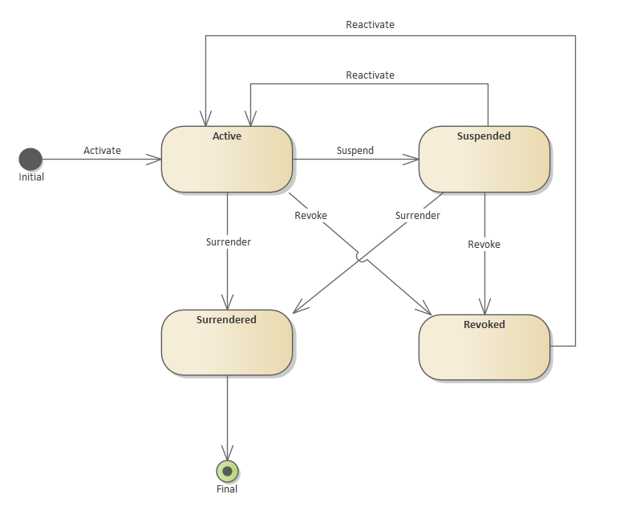
Software Product Status
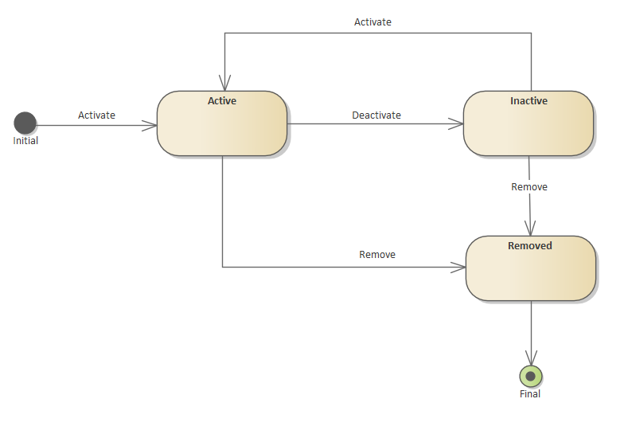
Status Mapping
When the ACCC Registrar changes the accreditation status for an ADR for any status other than active, the associated Software Products status will be changed accordingly.
The cascading status mappings are as follows:
| ADR Status | Cascaded SP Status |
|---|---|
| Suspended | Inactive |
| Revoked | Removed |
| Surrendered | Removed |
These cascaded software product statuses are also catered for in collection arrangements. Please refer to the Accreditation Status Discovery section for more details.
Data Holder Responsibilities
The ACCC Registrar has the ability to change the status of a Software Product independently of the ADR accreditation status. Therefore, both the ADR and Software Product statuses should be referenced, to determine the Data Holder's responsibilities for data disclosure, consent and registration management '
| ADR Status | SP Status | Disclose of CDR Data | Facilitate Consent Authorisation | Facilitate Consent Withdrawal | Invalidate Consents | Cleanup Registration |
|---|---|---|---|---|---|---|
| Active | Active | |||||
| Active | Inactive | |||||
| Active | Removed | |||||
| Suspended | Inactive | |||||
| Suspended | Removed | |||||
| Revoked | Removed | |||||
| Surrendered | Removed |
- Disclosure of CDR data MUST be in response to valid requests in accordance with the CDR rules and standards
- The status of an Accredited Data Recipient Brand does not impact Data Holder responsibilities due to the cascade rules outlined above
- When an Accredited Data Recipient status is Suspended, Revoked or Surrendered the Software Product status cannot be Active
- Invalidation of consents and cleanup of registrations are bulk operations. It is reasonable to execute these as batch tasks performed overnight
Metadata Cache Management
Data Holders are required to be able to react to Data Recipient and associated Software Statuses changes within 5 minutes of the change occuring on the CDR Register
To achieve this, Data Holders can poll the GetDataRecipientsStatus, GetSoftwareProductsStatus and GetDataRecipients APIs to retrieve the current statuses and cache these for use during requests for Consumer Data
Data Holders will need to choose a frequency of polling which ensures their systems can respond to status changes within the required timeframe
Data Holders and Data Recipients will be required to cache all other participant data they use and periodically update this cache using a slow poll. This ensures that changes to participant configuration propagates throughout the ecosystem in a predictable timeframe
Cache update periods
The following are the recommended caching times for data retrieved from the Register APIs.
| API | Type | Period |
|---|---|---|
| GetDataRecipientsStatus | Public | 2-5 minutes |
| GetSoftwareProductsStatus | Public | 2-5 minutes |
| GetDataRecipients (statuses) | Public | 2-5 minutes |
| GetDataRecipients (other data) | Public | 6 hours |
| GetDataHolderBrands | Private | 6 hours |
ETag Support
All public APIs are hosted on a CDN supporting ETag cache validators. ETags can be utilised to detect whether the content has changed.
Further information on the usage of ETag and the associated If-None-Match headers can be found at: https://docs.microsoft.com/en-au/azure/cdn/cdn-how-caching-works
Change detection using ETags
Clients polling the CDN hosted APIs specifying the ETag header can rely on the 304 Not Modified response to indicate no changes have occurred since the previous poll.
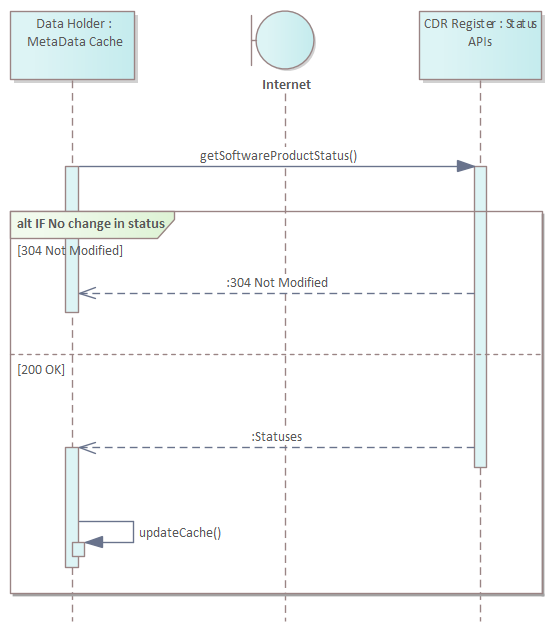
Checking Request Validity
Request for Disclosure of CDR Data: Checking Validity of Accredited Data Recipient and associated Software Product
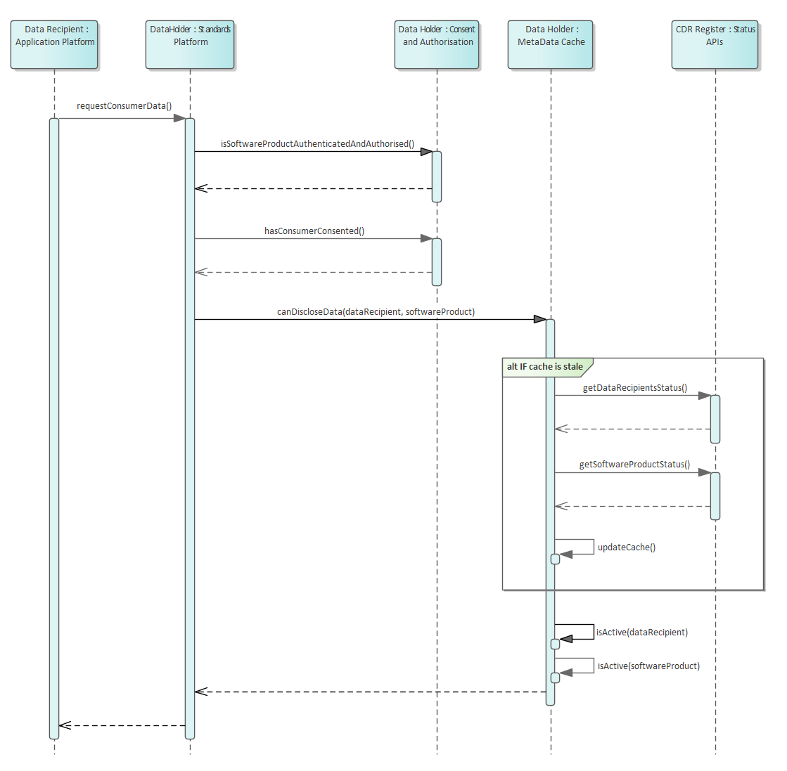 Pre-requisites: SSL connection has been established between all parties and Data Recipient has been issued an access token
Request for Consent Withdrawal: Checking Validity of Accredited Data Recipient and associated Software Product
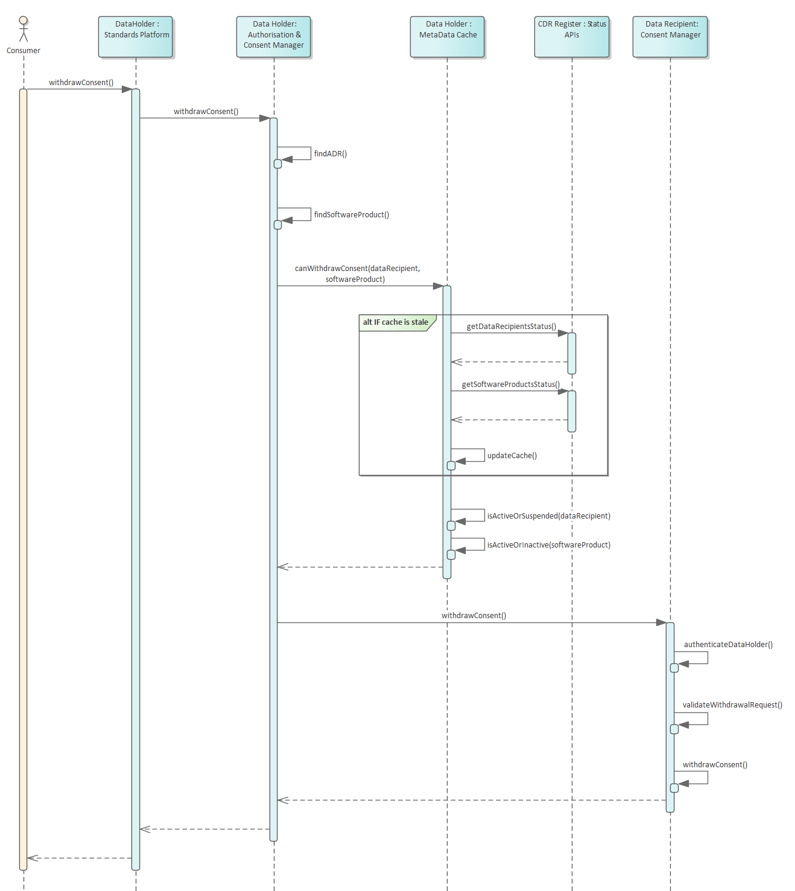 Pre-requisites: SSL connection has been established between all parties
Status Changes
ADR Active
Once a Data Recipient has been granted accreditation by the ACCC (as Data Recipient Accreditor) and has completed the necessary steps to be added to the Register (as specified in the rules), the following actions and responsibilities will arise:
- The Registrar will issue the Accredited Data Recipient all required certificates
- The Accredited Data Recipient's status will be set to 'active'
- The Accredited Data Recipient will be able to register their Software Products with Data Holders within the ecosystem
- The Data Holder's responsibilities with this active Data Recipient are outlined at Data Holder Responsibilities
ADR Suspended
Where the ACCC (as Data Recipient Accreditor) has made a decision to suspend the accreditation of an Accredited Data Recipient, and has notified the decision to the Registrar the following actions and responsibilities will arise:
- The Registrar will update the CDR Register to change the Accredited Data Recipient's status to 'suspended' and status of all associated Software Products to 'inactive'
- The Data Holder will identify the change in status of the Data Recipient and associated Software Products during its next poll within the required timeframe
- The Data Holder's responsibilities with this suspended Data Recipient are outlined at Data Holder Responsibilities
ADR Reactivated from Suspension
An Accredited Data Recipient can move from the suspended status back to the active status when a suspension expires or is revoked by the ACCC (as Data Recipient Accreditor). Once this has occurred, the following actions and responsibilities are:
- The Registrar will update the CDR Register to change the Data Recipient's status to 'active'
- The Data Holder will identify the change in status of the Data Recipient during its next poll within the required timeframe
- The Data Holder's responsibilities with this reactivated Data Recipient are outlined at Data Holder Responsibilities
- Software Products for the associated Data Recipient will only be reactivated on a case by case basis
ADR Revoked
Where the ACCC (as Data Recipient Accreditor) has made a decision to revoke the accreditation of an Accredited Data Recipient, and has notified the decision to the Registrar, the following actions and responsibilities will arise:
- The Registrar will revoke Accredited Data Recipient's certificates
- The Registrar will update the CDR Register to change the Accredited Data Recipient's status to 'revoked' and status of all associated Software Products to 'inactive'
- Once the appeals timeframe has been exceeded, Software Products will be moved to the 'removed' status
- The Data Holder will identify the change in status of the Data Recipient and associated Software Products during its next poll within the required timeframe
- The Data Holder's responsibilities with this revoked Data Recipient are outlined at Data Holder Responsibilities
ADR Reactivated from Revoked
An Accredited Data Recipient can move from the revoked status back to the active status. Once this has occurred, the following actions and responsibilities are:
- The Registrar will reissue the Accredited Data Recipient all required certificates
- The Registrar will update the CDR Register to change the Data Recipient's status to 'active'
- The Data Holder will identify the change in status of the Data Recipient during its next poll within the required timeframe
- The Data Holder's responsibilities with this reactivated Data Recipient are outlined at Data Holder Responsibilities
ADR Surrendered
Where an Accredited Data Recipient has surrendered their accreditation, and the Data Recipient Accreditor has notified the Registrar of the surrender, the following actions and responsibilities will arise:
- The Registrar will revoke Accredited Data Recipient's certificates
- The Registrar will update the CDR Register to change the Accredited Data Recipient's status to 'surrendered' and status of all associated Software Products to 'removed'
- The Data Holder will identify the change in status of the Data Recipient and associated Software Products during its next poll within the required timeframe
- The Data Holder's responsibilities with this surrendered Data Recipient and associated Software Products are outlined at Data Holder Responsibilities
New ADR Software Product Active
Once an Accredited Data Recipient has completed the necessary steps to add a new Software Product to the Register, the following actions and responsibilities will arise:
- The Software Product status will be set to 'active'
- The Accredited Data Recipient will be able to register this Software Product with Data Holders within the ecosystem
- The Data Holder's responsibilities with this active ADR Software Product are outlined at Data Holder Responsibilities
ADR Software Product Deactivated
Where the ACCC (as Data Recipient Accreditor) has made a decision to deactivate the status of an Accredited Data Recipient’s Software Product, and has notified the decision to the Registrar the following actions and responsibilities will arise:
- The Registrar will update the CDR Register to change the Software Product’s status to 'inactive'
- The Data Holder will identify the change in status of the Software Product during its next poll within the required timeframe
- The Data Holder's responsibilities with this deactivated ADR Software Product are outlined at Data Holder Responsibilities
ADR Software Product Reactivated
A Software Product can move from the inactive status back to the active status where a suspension expires or is revoked by the ACCC (as Data Recipient Accreditor). Once this has occurred, the following actions and responsibilities are:
- The Registrar will update the CDR Register to change the Software Product’s status to 'active'
- The Data Holder will identify the change in status of the Software Product during its next poll within the required timeframe
- The Data Holder's responsibilities with this reactivated ADR Software Product are outlined at Data Holder Responsibilities
ADR Software Product Removed
Where the ACCC (as Data Recipient Accreditor) has made a decision to revoke the status of an Accredited Data Recipient’s Software Product, and has notified the decision to the Registrar, the following actions and responsibilities will arise:
- The Registrar will update the CDR Register to change the Software Product’s status to 'removed'
- The Data Holder will identify the change in status of the Software Product during its next poll within the required timeframe
- The Data Holder's responsibilities with this removed ADR Software Product are outlined at Data Holder Responsibilities
Data Holder Status Change
Rules regarding Data Holder off-boarding and revocation have not yet been provided. Updates to this design will be added once the rules have been defined.
Cache Refresh Metadata Request
To facilitate the Metadata update requests, Data Holders will need to implement the Admin endpoint as per CDS standard: https://consumerdatastandardsaustralia.github.io/standards/#admin-apis
This endpoint exposes functionality for the ACCC to request participants to refresh their caches. Cache refreshes may be requested in the following scenarios:
- A new Data Holder Brand becomes active
- A new Accredited Data Recipient Software Product becomes active
- A Data Holder Brand has been removed from the CDR
- An Accredited Data Recipient Software Product has been deactivated or removed from the CDR Register
- An Accredited Data Recipient has been surrendered, suspended or revoked from the CDR
Data Holder Caching of Accredited Data Recipients Software Product Metadata
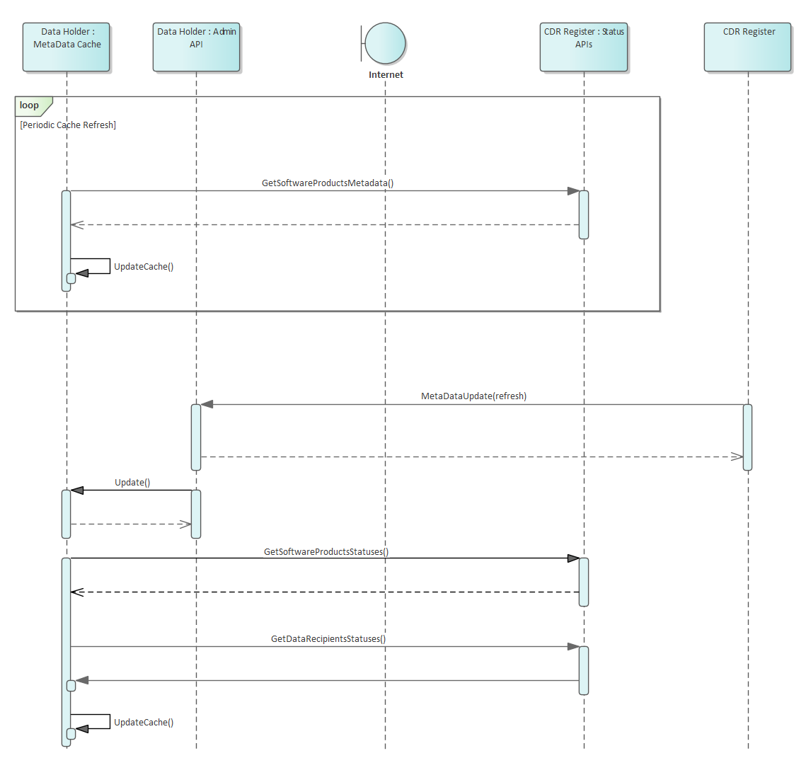
Incident Management
Currently under the CDR rules, Data Holders within the CDR ecosystem will be able to refuse to disclose CDR data in response to valid requests from Accredited Data Recipients:
(a) as described under rule 4.7(1); or
(b) in the circumstances set out in the standards (as provided for by rule 4.2(1))
Please also refer to the amending instrument to these rules
Security Profile
Overview
The security profile of the CDR Register follows the conventions defined by the Consumer Data Standards Security Profile
The CDR Register Secured APIs will use
Mutual Authentication TLS[MTLS] as the transport security and the OIDCclient_credentialsgrant type authenticationThe CDR Register unsecured APIs will use [TLS] as the transport security with no authentication requirements
All client and server certificates are generated by the CDR Register certificate authority to facilitate this transport. Please see the Certificate Management section for further details
The Client Authentication method to be used by ADRs to the CDR Register will use
private_key_jwtfor procuring access tokens
Please refer to the Consumer Data Standards Security Overview for Symbols and Abbreviated Terms
Register Endpoints
The CDR Register exposes an OIDC Configuration Endpoint with associated JWKS and token endpoints to faciliate issuance of access tokens to consume the protected Register APIs.
Retrieve CDR Register OIDC Discovery Endpoint
GET /.well-known/openid-configuration HTTP/1.1
Host: cdr.register
## Response
{
"issuer": "https://cdr.register/idp",
"jwks_uri": "https://cdr.register/idp/.well-known/openid-configuration/jwks",
"token_endpoint": "https://cdr.register/idp/connect/token",
"claims_supported": ["sub"],
"id_token_signing_alg_values_supported": ["PS256"],
"subject_types_supported": ["public"],
"scopes_supported": ["cdr-register:bank:read"],
"response_types_supported": ["token"],
"grant_types_supported": ["client_credentials"],
"token_endpoint_auth_methods_supported": ["private_key_jwt"],
"tls_client_certificate_bound_access_tokens": true,
"request_object_signing_alg_values_supported": ["PS256"]
}
Retrieving Access Token
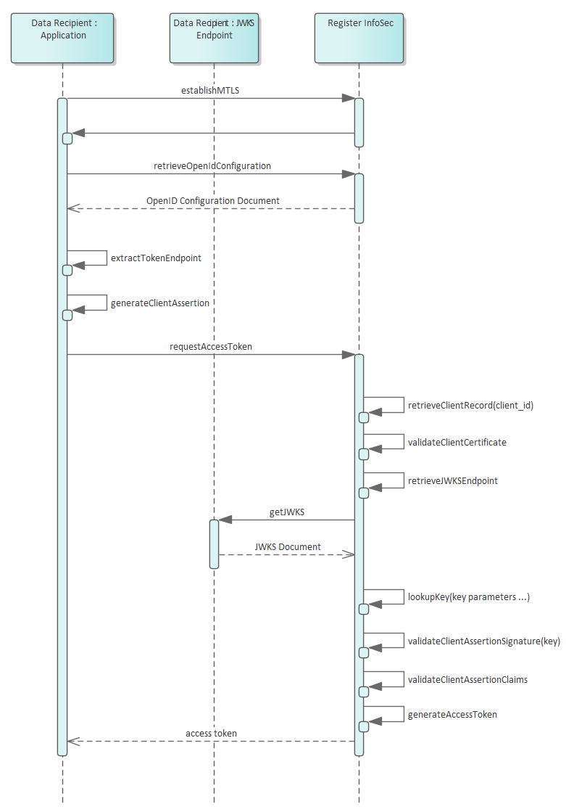
Client Authentication
Request CDR Register Access Token
POST /token HTTP/1.1
Host: cdr.register
Content-Type: application/x-www-form-urlencoded
grant_type=client_credentials&
client_id=<brand id> OR <software product id> &
client_assertion_type=urn%3Aietf%3Aparams%3Aoauth%3Aclient-assertion-type%3Ajwt-bearer&
client_assertion=eyJhbGciOiJQUzI1NiIsInR5cCI6IkpXVCIsImtpZCI6IjEyNDU2In0.ey ...&
scope=cdr-register%3Abank%3Aread
## Decoded client assertion JWT
{
"alg": "PS256",
"typ": "JWT",
"kid": "b50641343f8f4717a4865d238b6297b8"
}
{
"iss": "<brand id> OR <software product id>",
"sub": "<brand id> OR <software product id>",
"exp": 1516239322,
"aud": "https://cdr.register/idp/connect/token",
"jti": "37747cd1-c105-4569-9f75-4adf28b73e31"
}
## Response
{
"access_token": "eyJhbGciOiJQUz...",
"expires_in": 7200,
"token_type": "Bearer",
"scope": "cdr-register:bank:read openid"
}
Please refer to the Consumer Data Standard for reference to the client authentication methods between participants
Client Authentication with the CDR Register
Using the same client authentication approach as the Consumer Data Standards, interactions with the CDR Register use private_key_jwt Client Authentication method as specified at section 9 of [OIDC].
CDR Register Access Token Request using Client Authentication
The CDR Register MUST support the authentication of the Data Recipients using the
private_key_jwtclient authentication methodCDR Register public keys MUST only be obtained from the exposed endpoint exposed for this purpose.
As per the Consumer Data Standards, While [MTLS] is utilised for transaction security and as a Holder of Key mechanism the PKI Mutual TLS OAuth Client Authentication Method SHALL NOT be supported as the mechanism for client authentication.
- Access Token will be requested as per the Assertion Framework for OAuth2 Client Authentication profile
- Data Holder and Data Recipient public keys are retrieved from the CDR Register
- Refresh tokens will not be provided for grant_type
client_credentials - The JWT must contain the following Claim Values :
-
iss: REQUIRED. Issuer. This MUST contain theData Recipient Brand IDORSoftware Product IDissued by the CDR Register -
sub: REQUIRED. Subject. This MUST contain theData Recipient Brand IDORSoftware Product IDissued by the CDR Register -
aud: REQUIRED. Audience. The URL of the end point being invoked -
exp: REQUIRED. Expiration time on or after which the ID Token MUST NOT be accepted for processing -
jti: REQUIRED. JWT ID. A unique identifier for the token, which can be used to prevent reuse of the token. These tokens MUST only be used once.
When invoking the protected end point, the assertion MUST be sent with the POST method and MUST include the following parameters:
-
grant_type: This MUST be set toclient_credentials -
client_id: This MUST be set to the ID of the calling clientData Recipient Brand IDORSoftware Product ID -
client_assertion_type: This MUST be set to:urn:ietf:params:oauth:client-assertion-type:jwt-bearer -
client_assertion: This MUST be set to the digitally signed JWT
Identifiers
client_id, sub and where appropriate iss, are expected to contain the unique identifier for the client.
The following client identifiers will be used:
| Client | Scenario | Identifier |
|---|---|---|
| Software Product | Calls to Data Holder Brand Authenticated APIs | Client ID as issued by the target Data Holder Brand |
| Data Recipient Brand / Software Product | Calls to CDR Register Authenticated APIs | Data Recipient Brand ID or Software Product ID as issued by CDR Register |
| Data Holder Brand | Calls to Data Recipient Revocation and CDR Arrangement Management APIs | Data Holder Brand ID as issued by CDR Register |
| CDR Register | Calls to Data Holder Brand Admin APIs | value: cdr-register |
Transaction Security
Please refer to the Consumer Data Standards Transaction Security for Transaction Security details
Participant Endpoints
OIDC Discovery Configuration Endpoint
<InfoSecBaseUri>/.well-known/openid-configuration
Participants will be required to register base URIs against each of their brands to facilitate the implementation of the Consumer Data Standards
| Base URI | DH Brand | ADR Brand | Description |
|---|---|---|---|
| PublicBaseUri | Base URI for the Consumer Data Standard public endpoints. This should encompass all endpoints not requiring authentication | ||
| ResourceBaseUri | Base URI for the Consumer Data Standard resource endpoints. This should encompass all CDS resource endpoints requiring authentication | ||
| InfoSecBaseUri | Base URI for the Consumer Data Standard InfoSec endpoints. This provides ADRs reference to the OIDC Discovery Endpoint | ||
| AdminBaseUri | Base URI for the Consumer Data Standard admin endpoints called by the CDR Register | ||
| ExtensionBaseUri | Base URI for the Data Holder extension endpoints to the Consumer Data Standard (optional) | ||
| RevocationUri | Used for consent withdrawal notification from a Data Holder and is populated in the SSA | ||
| RecipientBaseUri | Base URI for the Consumer Data Standard Data Recipient endpoints. This should be the base to provide reference to Data Recipient Endpoints | ||
| JwksUri | DH: Used for client authentication for DH -> ADR communication and is populated in the GetDataHolderBrands API ADR: Used for client authentication for ADR -> DH & Register communication and is populated in the SSA |
Certificate Management
Issued by ACCC CA for Data Holders
| Certificate | Function | Notes |
|---|---|---|
| Server Certificate(s) | Certificate is issued to a FQDNSecures the following:- Resource endpoints- InfoSec endpoints- Admin endpoints | It will be up to the DH on how these endpoints aresegregated. They may all be on the one domain(so only one certificate required) or could be separated |
Issued by ACCC CA for Accredited Data Recipients
| Certificate | Function | Notes |
|---|---|---|
| Client Certificate | Secures the following:- Consuming Register APIs- Consuming Data Holder APIs | |
| Server Certificate(s) | Certificate is issued to a FQDNSecures the following:- Revocation endpoint - CDR Arrangement Management endpoint - JWKS endpoint | ADRs may choose to secure their endpoints with an ACCC CA issued certificate or a certificate issued by a public CA |
CDR Arrangement Management Endpoint is a requirement from November 2020
CDR Certificate Authority
DigiCert acts as the certificate authority that issues and manages certificates to CDR participants as directed by the ACCC in its capacity as the CDR Registrar
Certificate Trust Model
The CDR utilises a private certificate trust chain for all ACCC CA secured endpoints being hosted by Data Holders, Data Recipients and the CDR Register.
This trust chain encompasses a set of root and intermediate CAs issued for the test and production environments
| Test Environment | CA Root TestCA Intermediate Test |
| Production Environment | CA Root ProductionCA Intermediate Production |
Certificate Signing Request Profile
When requesting ACCC CA certificates, certificate signing requests will need to be provided, conforming to the following profile:
| CSR Field | Server | Client |
|---|---|---|
| Common Name | Primary DNS Namee.g. api1.test.entity.com | Software Product Name OR Brand Name |
| SAN (Optional) | Secondary DNS Name(s) e.g. api2.test.entity.com | N/A |
| Organization | Brand Name (Legal Entity Name) | Brand Name (Legal Entity Name) |
| Organizational Unit | Consumer Data Right | Consumer Data Right |
| Country | Country of participante.g. AU | Country of participante.g. AU |
| Signature Algorithm | SHA256 | SHA256 |
| Key Algorithm | RSA | RSA |
| Key Size | 2048 | 2048 |
Please refer to the onboarding guide for further information on certificate issuance
Certificate Usage
Further details on ACCC CA issued certificates can be found in the ACCC Certificate Practice Statement V1.0
Availability
The following scenarios outline the expectations of Data Holders and Accredited Data Recipients within the Consumer Data Right ecosystem when outages occur
Note that a section on backoff patterns has been provided outlining recommendations on how to poll endpoints during an outage
CDN Hosted Endpoints
The CDR Register utilises a CDN to host its public APIs. During CDR Register outages, participants are still to rely on the CDN copies of these endpoints. If the CDN is no longer available, participants will be expected to rely on their caches
| Endpoint | Public (CDN Hosted) |
|---|---|
| GetDataHolderBrands | |
| GetSoftwareStatementAssertion | |
| GetSoftwareProductsStatus | |
| GetDataRecipientsStatus | |
| GetDataRecipients |
CDR Register Unavailable
| Result | Data Holders will not be able to communicate with the CDR Register |
| Impact | Data Holders will not be able to maintain up-to-date status information of Data Recipients and Software Products |
| Impact | Data Holders will not be able to detect when new Data Recipients and/or associated Software Products enter the ecosystem |
| Expectation | - It is not expected that the status of an ADR or Software Product will change when the CDR Register or CDN is unavailable, or the introduction of new ADRs - Data Holders will continue to operate until informed by ACCC Operations that consumer data will not be shared - Once the CDR Register becomes available, all Data Holders will retrieve up-to-data status information on their next poll |
| Result | Data Recipients will not be able to communicate with the CDR Register |
| Impact | Data Recipients will not be able to retrieve SSAs, therefore, won't be able to register with any Data Holders |
| Impact | Data Recipients will not be able to detect when new Data Holders enter the ecosystem |
| Expectation | Data Recipients will need to wait until the CDR Register becomes available to register with a Data Holder |
Certificate Authority Unavailable
| Result | OCSP services will not be available |
| Impact | Participants will not be able to verify the status of CA certificates |
| Expectation | - Participants will honour cached Certificate statuses from previous OCSP checks. - Once cached certificate statuses have expired, data sharing will stop It can be expected that CA certificate statuses will not change while the CA is unavailable - Once the CA becomes available, certificate statuses are again updated through OCSP |
Data Recipient Unavailable
| Result | Data Holders will not be able to communicate with the Accredited Data Recipient |
| Impact | Data Holders will not be able to inform the ADR that consent has been withdrawn |
| Expectation | - Data Holders MUST continually poll the ADR using EITHER one of the specified backoff patterns until recovery or the pattern retry period has been exceeded - Upon recovery, the authorisation withdrawal process will need to be executed recognising the expectation in the rules that withdrawal of authorisation by a consumer will be communicated by a DH to an ADR |
Data Holder Unavailable
| Result | Accredited Data Recipients will not be able to communicate with Data Holders |
| Impact | Accredited Data Recipients will not be able to inform the Data Holder of change in consent |
| Impact | Accredited Data Recipients will not be able to retrieve Product & Consumer data |
| Expectation | - Accredited Data Recipients will need to continually poll the Data Holder until recovery - Data Recipients will be able to check the GetOutages endpoint to determine when the Data Holder will become available - Upon recovery, the consent withdrawal process will need to be executed as required |
| Result | The CDR Register will not be able to communicate with the Data Holder |
| Impact | The CDR Register will not be able to retrieve metrics information |
| Expectation | The CDR Register will back-fill metrics once the Data Holder becomes available |
Backoff Patterns
When endpoints are unavailable, as described in the above sections, there is a requirement that participants will poll the target endpoints until they become available. Participants will be expected to implement robust solutions which cater for temporary outages.
The expectation is that either a long-term or a short-term pattern will be to be used to meet these polling requirements
Long-term: Exponential Backoff over 7 days
The provided exponential backoff pseudocode can be used to poll unavailable endpoints for retry periods in the order of hours and days.
Exponential Backoff Pseudocode
Call the Target EndPoint
MAX_WAIT_TIME=3600000 (1 hr)
waitTime = 0
DO
waitTime= (2^retries * 100) milliseconds
wait for waitTime
status = Get Status of API call
IF status = SUCCESS
retry = false
ELSE
Unable to get a response or not a valid response
retry = true
END IF
WHILE (retry AND (waitTime < MAX_WAIT_TIME))
Continue calls every MAX_WAIT_TIME for the remaining period(s)
The provided pseudocode will result in the following retry times
| Retry Attempt | Wait Time (in milliseconds) |
|---|---|
| 1 | 200 |
| 2 | 400 |
| 3 | 800 |
| 4 | 1600 |
| 5 | 3200 |
| 6 | 6400 |
| 7 | 12800 |
| 8 | 25600 |
| 9 | 51200 |
| 10 | 102400 |
| 11 | 204800 |
| 12 | 409600 |
| 13 | 819200 |
| 14 | 1638400 |
| 15 | 3276800 |
| 16 | 3600000 |
| remaining period(s) | 3600000 |
Short-term: Fixed periodic retry over 10 minutes
For short-term retries, implementers may choose polling a given endpoint once per minute until recovery, or retry period has been exceeded
Versioning
ACCC will follow the versioning conventions outlined by the Data Standards Body.
Refer https://consumerdatastandardsaustralia.github.io/standards/#versioning
Transition and deprecation strategies will be developed in consultation with the Data Standards Body and industry.
Register APIs
| API | Caller | Description | mTLS | TLS | Bearer Token |
|---|---|---|---|---|---|
| GetDataHolderBrands | Data Recipient Brand or Software Product | Discovery of DH Brands and their associated endpoints | |||
| GetSoftwareStatementAssertion | Data Recipient Brand or Software Product | Get SSA for a Software Product to be used in Dynamic Client Registration | |||
| GetSoftwareProductsStatus | Data Holder Brand | Software Product Statuses to check validity of ADR requests | |||
| GetDataRecipientsStatus | Data Holder Brand | Data Recipient Statuses to check validity of ADR requests | |||
| GetDataRecipients | Data Holder Brand | Data Recipient, brand and product details to render Data Holder Consumer Dashboard |
Base URLs:
| Production TLS | https://api.cdr.gov.au |
| Production mTLS | https://secure.api.cdr.gov.au |
GetDataHolderBrands
Get Data Holder Brands from the CDR Register
Code samples
GET https://<register-base-url>/cdr-register/v1/{industry}/data-holders/brands HTTP/1.1
Host: <register-base-url>
Accept: application/json
Authorization: Bearer <access-token>
x-v: string
GET /{industry}/data-holders/brands
Endpoint Version
| Version | 1 |
Parameters
| Name | In | Type | Required | Description |
|---|---|---|---|---|
| industry | path | string | true | The industry the participant is retrieving data for (Banking, etc) |
| updated-since | query | string(date-time) | false | none |
| page | query | integer(int32) | false | none |
| page-size | query | integer(int32) | false | none |
| Authorization | header | string | true | An Authorisation Token as per RFC6750 |
| x-v | header | string | false | The version of the API end point that the CDR Register has responded with |
Enumerated Values
| Parameter | Value |
|---|---|
| industry | banking |
Example responses
200 Response
{
"data": [
{
"dataHolderBrandId": "string",
"brandName": "string",
"industry": "banking",
"logoUri": "string",
"legalEntity": {
"legalEntityId": "string",
"legalEntityName": "string",
"logoUri": "string",
"registrationNumber": "string",
"registrationDate": "2019-10-24",
"registeredCountry": "string",
"abn": "string",
"acn": "string",
"arbn": "string",
"industryCode": "string",
"organisationType": "SOLE_TRADER"
},
"status": "ACTIVE",
"endpointDetail": {
"version": "string",
"publicBaseUri": "string",
"resourceBaseUri": "string",
"infosecBaseUri": "string",
"extensionBaseUri": "string",
"websiteUri": "string"
},
"authDetails": [
{
"registerUType": "SIGNED-JWT",
"jwksEndpoint": "string"
}
],
"lastUpdated": "2019-10-24T03:51:44Z"
}
],
"links": {
"first": "string",
"last": "string",
"next": "string",
"prev": "string",
"self": "string"
},
"meta": {
"totalPages": 0,
"totalRecords": 0
}
}
Responses
| Status | Meaning | Description | Schema |
|---|---|---|---|
| 200 | OK | Success | ResponseRegisterDataHolderBrandList |
| 400 | Bad Request | Bad Request | ResponseErrorList |
| 401 | Unauthorized | Unauthorized | None |
| 406 | Not Acceptable | Not Acceptable | None |
Response Headers
| Status | Header | Type | Format | Description |
|---|---|---|---|---|
| 200 | x-v | string | The version of the API end point that the CDR Register has responded with. |
GetSoftwareStatementAssertion (SSA)
Get a Software Statement Assertion (SSA) for a software product on the CDR Register to be used for Dynamic Registration with a Data Holder
Code samples
GET https://<register-base-url>/cdr-register/v1/{industry}/data-recipients/brands/{dataRecipientBrandId}/software-products/{softwareProductId}/ssa HTTP/1.1
Host: <register-base-url>
Accept: application/json
Authorization: Bearer <access-token>
x-v: string
GET /{industry}/data-recipients/brands/{dataRecipientBrandId}/software-products/{softwareProductId}/ssa
Endpoint Version
| Version | 2 |
Parameters
| Name | In | Type | Required | Description |
|---|---|---|---|---|
| industry | path | string | true | The industry the participant is retrieving data for (Banking, etc) |
| dataRecipientBrandId | path | string | true | Unique id for the Accredited Data Recipient Brand that the Software Product is associated with in the CDR Register. Refer to Identifiers for details |
| softwareProductId | path | string | true | Unique id for the Accredited Data Recipient Software Product in the CDR Register. Refer to Identifiers for details |
| Authorization | header | string | true | An Authorisation Token as per RFC6750 |
| x-v | header | string | false | The version of the API end point that the CDR Register has responded with |
Enumerated Values
| Parameter | Value |
|---|---|
| industry | banking |
Example responses
200 Response
"string"
Responses
| Status | Meaning | Description | Schema |
|---|---|---|---|
| 200 | OK | Success | string |
| 400 | Bad Request | Bad Request | ResponseErrorList |
| 401 | Unauthorized | Unauthorized | None |
| 403 | Forbidden | Forbidden | ResponseErrorList |
| 406 | Not Acceptable | Not Acceptable | None |
Response Headers
| Status | Header | Type | Format | Description |
|---|---|---|---|---|
| 200 | x-v | string | The version of the API end point that the CDR Register has responded with. |
GetSoftwareProductsStatus
Get the statuses for software products from the CDR Register
Code samples
GET https://<register-base-url>/cdr-register/v1/{industry}/data-recipients/brands/software-products/status HTTP/1.1
Host: <register-base-url>
Accept: application/json
x-v: string
GET /{industry}/data-recipients/brands/software-products/status
Endpoint Version
| Version | 1 |
Parameters
| Name | In | Type | Required | Description |
|---|---|---|---|---|
| industry | path | string | true | The industry the participant is retrieving data for (Banking, etc) |
| x-v | header | string | false | The version of the API end point that the CDR Register has responded with |
Enumerated Values
| Parameter | Value |
|---|---|
| industry | banking |
Example responses
200 Response
{
"softwareProducts": [
{
"softwareProductId": "string",
"softwareProductStatus": "ACTIVE"
}
]
}
Responses
| Status | Meaning | Description | Schema |
|---|---|---|---|
| 200 | OK | Success | SoftwareProductsStatusList |
| 400 | Bad Request | Bad Request | ResponseErrorList |
| 406 | Not Acceptable | Not Acceptable | None |
Response Headers
| Status | Header | Type | Format | Description |
|---|---|---|---|---|
| 200 | x-v | string | The version of the API end point that the CDR Register has responded with. |
GetDataRecipientsStatus
Get the statuses for Data Recipients from the CDR Register
Code samples
GET https://<register-base-url>/cdr-register/v1/{industry}/data-recipients/status HTTP/1.1
Host: <register-base-url>
Accept: application/json
x-v: string
GET /{industry}/data-recipients/status
Endpoint Version
| Version | 1 |
Parameters
| Name | In | Type | Required | Description |
|---|---|---|---|---|
| industry | path | string | true | The industry the participant is retrieving data for (Banking, etc) |
| x-v | header | string | false | The version of the API end point that the CDR Register has responded with |
Enumerated Values
| Parameter | Value |
|---|---|
| industry | banking |
Example responses
200 Response
{
"dataRecipients": [
{
"dataRecipientId": "string",
"dataRecipientStatus": "ACTIVE"
}
]
}
Responses
| Status | Meaning | Description | Schema |
|---|---|---|---|
| 200 | OK | Success | DataRecipientsStatusList |
| 400 | Bad Request | Bad Request | ResponseErrorList |
| 406 | Not Acceptable | Not Acceptable | None |
Response Headers
| Status | Header | Type | Format | Description |
|---|---|---|---|---|
| 200 | x-v | string | The version of the API end point that the CDR Register has responded with. |
GetDataRecipients
Code samples
GET https://<register-base-url>/cdr-register/v1/{industry}/data-recipients HTTP/1.1
Host: <register-base-url>
Accept: application/json
x-v: string
GET /{industry}/data-recipients
Endpoint Version
| Version | 2 |
Parameters
| Name | In | Type | Required | Description |
|---|---|---|---|---|
| industry | path | string | true | The industry the participant is retrieving data for (Banking, etc) |
| x-v | header | string | false | The version of the API end point that the CDR Register has responded with |
Enumerated Values
| Parameter | Value |
|---|---|
| industry | banking |
Example responses
200 Response
{
"data": [
{
"legalEntityId": "string",
"legalEntityName": "string",
"accreditationNumber": "string",
"industry": "banking",
"logoUri": "string",
"dataRecipientBrands": [
{
"dataRecipientBrandId": "string",
"brandName": "string",
"logoUri": "string",
"softwareProducts": [
{
"softwareProductId": "string",
"softwareProductName": "string",
"softwareProductDescription": "string",
"logoUri": "string",
"status": "ACTIVE"
}
],
"status": "ACTIVE"
}
],
"status": "ACTIVE",
"lastUpdated": "2019-10-24T03:51:44Z"
}
]
}
Responses
| Status | Meaning | Description | Schema |
|---|---|---|---|
| 200 | OK | Success | ResponseRegisterDataRecipientList |
| 400 | Bad Request | Bad Request | ResponseErrorList |
| 403 | Forbidden | Forbidden | ResponseErrorList |
| 406 | Not Acceptable | Not Acceptable | None |
Response Headers
| Status | Header | Type | Format | Description |
|---|---|---|---|---|
| 200 | x-v | string | The version of the API end point that the CDR Register has responded with. |
Schemas
ResponseRegisterDataHolderBrandList
{
"data": [
{
"dataHolderBrandId": "string",
"brandName": "string",
"industry": "banking",
"logoUri": "string",
"legalEntity": {
"legalEntityId": "string",
"legalEntityName": "string",
"logoUri": "string",
"registrationNumber": "string",
"registrationDate": "2019-10-24",
"registeredCountry": "string",
"abn": "string",
"acn": "string",
"arbn": "string",
"industryCode": "string",
"organisationType": "SOLE_TRADER"
},
"status": "ACTIVE",
"endpointDetail": {
"version": "string",
"publicBaseUri": "string",
"resourceBaseUri": "string",
"infosecBaseUri": "string",
"extensionBaseUri": "string",
"websiteUri": "string"
},
"authDetails": [
{
"registerUType": "SIGNED-JWT",
"jwksEndpoint": "string"
}
],
"lastUpdated": "2019-10-24T03:51:44Z"
}
],
"links": {
"first": "string",
"last": "string",
"next": "string",
"prev": "string",
"self": "string"
},
"meta": {
"totalPages": 0,
"totalRecords": 0
}
}
Response containing a list of CDR Register Data Holder Brand objects
Properties
| Name | Type | Required | Restrictions | Description |
|---|---|---|---|---|
| data | [RegisterDataHolderBrand] | true | none | Response data for the query |
| links | LinksPaginated | true | none | none |
| meta | MetaPaginated | true | none | none |
RegisterDataHolderBrand
{
"dataHolderBrandId": "string",
"brandName": "string",
"industry": "banking",
"logoUri": "string",
"legalEntity": {
"legalEntityId": "string",
"legalEntityName": "string",
"logoUri": "string",
"registrationNumber": "string",
"registrationDate": "2019-10-24",
"registeredCountry": "string",
"abn": "string",
"acn": "string",
"arbn": "string",
"industryCode": "string",
"organisationType": "SOLE_TRADER"
},
"status": "ACTIVE",
"endpointDetail": {
"version": "string",
"publicBaseUri": "string",
"resourceBaseUri": "string",
"infosecBaseUri": "string",
"extensionBaseUri": "string",
"websiteUri": "string"
},
"authDetails": [
{
"registerUType": "SIGNED-JWT",
"jwksEndpoint": "string"
}
],
"lastUpdated": "2019-10-24T03:51:44Z"
}
Properties
| Name | Type | Required | Restrictions | Description |
|---|---|---|---|---|
| dataHolderBrandId | string | true | none | Unique id of the Data Holder Brand issued by the CDR Register. Refer to Identifiers for details |
| brandName | string | true | none | The name of Data Holder Brand |
| industry | string | true | none | The industry the Data Holder brand belongs to (Banking, etc) |
| logoUri | string | true | none | Brand logo URI |
| legalEntity | LegalEntityDetail | true | none | The data that is common to all organisations, regardless of the type (e.g. company, trust, partnership, government) |
| status | string | true | none | none |
| endpointDetail | RegisterDataHolderBrandServiceEndpoint | true | none | Endpoints related to Data Holder Brand services |
| authDetails | [RegisterDataHolderAuth] | true | none | [Provides details of authorisation endpoints for Data Holders] |
| lastUpdated | string(date-time) | true | none | The date/time that the Data Holder Brand data was last updated in the Register |
Enumerated Values
| Property | Value |
|---|---|
| industry | banking |
| status | ACTIVE |
| status | INACTIVE |
| status | REMOVED |
SoftwareProductsStatusList
{
"softwareProducts": [
{
"softwareProductId": "string",
"softwareProductStatus": "ACTIVE"
}
]
}
Properties
| Name | Type | Required | Restrictions | Description |
|---|---|---|---|---|
| softwareProducts | [SoftwareProductStatus] | true | none | none |
SoftwareProductStatus
{
"softwareProductId": "string",
"softwareProductStatus": "ACTIVE"
}
Properties
| Name | Type | Required | Restrictions | Description |
|---|---|---|---|---|
| softwareProductId | string | true | none | Unique id of the software product issued by the CDR Register. Refer to Identifiers for details |
| softwareProductStatus | string | true | none | Software product status in the CDR Register |
Enumerated Values
| Property | Value |
|---|---|
| softwareProductStatus | ACTIVE |
| softwareProductStatus | INACTIVE |
| softwareProductStatus | REMOVED |
DataRecipientsStatusList
{
"dataRecipients": [
{
"dataRecipientId": "string",
"dataRecipientStatus": "ACTIVE"
}
]
}
Properties
| Name | Type | Required | Restrictions | Description |
|---|---|---|---|---|
| dataRecipients | [DataRecipientStatus] | true | none | none |
DataRecipientStatus
{
"dataRecipientId": "string",
"dataRecipientStatus": "ACTIVE"
}
Properties
| Name | Type | Required | Restrictions | Description |
|---|---|---|---|---|
| dataRecipientId | string | true | none | Unique id of the Data Recipient issued by the CDR Register. Refer to Identifiers for details |
| dataRecipientStatus | string | true | none | Data Recipient status in the CDR Register |
Enumerated Values
| Property | Value |
|---|---|
| dataRecipientStatus | ACTIVE |
| dataRecipientStatus | SUSPENDED |
| dataRecipientStatus | REVOKED |
| dataRecipientStatus | SURRENDERED |
ResponseRegisterDataRecipientList
{
"data": [
{
"legalEntityId": "string",
"legalEntityName": "string",
"accreditationNumber": "string",
"industry": "banking",
"logoUri": "string",
"dataRecipientBrands": [
{
"dataRecipientBrandId": "string",
"brandName": "string",
"logoUri": "string",
"softwareProducts": [
{
"softwareProductId": "string",
"softwareProductName": "string",
"softwareProductDescription": "string",
"logoUri": "string",
"status": "ACTIVE"
}
],
"status": "ACTIVE"
}
],
"status": "ACTIVE",
"lastUpdated": "2019-10-24T03:51:44Z"
}
]
}
Response containing a list of Data Recipients in the CDR Register
Properties
| Name | Type | Required | Restrictions | Description |
|---|---|---|---|---|
| data | [RegisterDataRecipient] | true | none | Response data for the query |
RegisterDataRecipient
{
"legalEntityId": "string",
"legalEntityName": "string",
"accreditationNumber": "string",
"industry": "banking",
"logoUri": "string",
"dataRecipientBrands": [
{
"dataRecipientBrandId": "string",
"brandName": "string",
"logoUri": "string",
"softwareProducts": [
{
"softwareProductId": "string",
"softwareProductName": "string",
"softwareProductDescription": "string",
"logoUri": "string",
"status": "ACTIVE"
}
],
"status": "ACTIVE"
}
],
"status": "ACTIVE",
"lastUpdated": "2019-10-24T03:51:44Z"
}
Properties
| Name | Type | Required | Restrictions | Description |
|---|---|---|---|---|
| legalEntityId | string | true | none | Unique id of the Data Recipient Legal Entity issued by the CDR Register. Refer to Identifiers for details |
| legalEntityName | string | true | none | Legal name of the Data Recipient |
| accreditationNumber | string | true | none | CDR Register issued human readable unique number given to Data Recipients upon accreditation |
| industry | string | true | none | none |
| logoUri | string | true | none | Legal Entity logo URI |
| dataRecipientBrands | [DataRecipientBrandMetaData] | false | none | [Metadata related to Data Recipient Brand] |
| status | string | true | none | none |
| lastUpdated | string(date-time) | true | none | The date/time that the Legal Entity was last updated in the CDR Register |
Enumerated Values
| Property | Value |
|---|---|
| industry | banking |
| status | ACTIVE |
| status | SUSPENDED |
| status | REVOKED |
| status | SURRENDERED |
DataRecipientBrandMetaData
{
"dataRecipientBrandId": "string",
"brandName": "string",
"logoUri": "string",
"softwareProducts": [
{
"softwareProductId": "string",
"softwareProductName": "string",
"softwareProductDescription": "string",
"logoUri": "string",
"status": "ACTIVE"
}
],
"status": "ACTIVE"
}
Metadata related to Data Recipient Brand
Properties
| Name | Type | Required | Restrictions | Description |
|---|---|---|---|---|
| dataRecipientBrandId | string | true | none | Unique id of the Data Recipient brand issued by the CDR Register. Refer to Identifiers for details |
| brandName | string | true | none | Data Recipient Brand name |
| logoUri | string | true | none | Data Recipient Brand logo URI |
| softwareProducts | [SoftwareProductMetaData] | false | none | [Data Recipient Brand Software Products] |
| status | string | true | none | none |
Enumerated Values
| Property | Value |
|---|---|
| status | ACTIVE |
| status | INACTIVE |
| status | REMOVED |
SoftwareProductMetaData
{
"softwareProductId": "string",
"softwareProductName": "string",
"softwareProductDescription": "string",
"logoUri": "string",
"status": "ACTIVE"
}
Data Recipient Brand Software Products
Properties
| Name | Type | Required | Restrictions | Description |
|---|---|---|---|---|
| softwareProductId | string | true | none | Unique id of the Data Recipient software product issued by the CDR Register. Refer to Identifiers for details |
| softwareProductName | string | true | none | Name of the software product |
| softwareProductDescription | string | false | none | Description of the software product |
| logoUri | string | true | none | Software product logo URI |
| status | string | true | none | none |
Enumerated Values
| Property | Value |
|---|---|
| status | ACTIVE |
| status | INACTIVE |
| status | REMOVED |
LegalEntityDetail
{
"legalEntityId": "string",
"legalEntityName": "string",
"logoUri": "string",
"registrationNumber": "string",
"registrationDate": "2019-10-24",
"registeredCountry": "string",
"abn": "string",
"acn": "string",
"arbn": "string",
"industryCode": "string",
"organisationType": "SOLE_TRADER"
}
The data that is common to all organisations, regardless of the type (e.g. company, trust, partnership, government)
Properties
| Name | Type | Required | Restrictions | Description |
|---|---|---|---|---|
| legalEntityId | string | true | none | Unique id of the organisation issued by the CDR Register. Refer to Identifiers for details |
| legalEntityName | string | true | none | Unique legal name of the organisation |
| logoUri | string | true | none | Legal Entity logo URI |
| registrationNumber | string | false | none | Unique registration number (if the company is registered outside Australia) |
| registrationDate | string(date) | false | none | Date of registration (if the company is registered outside Australia) |
| registeredCountry | string | false | none | Country of registeration (if the company is registered outside Australia) |
| abn | string | false | none | Australian Business Number for the organisation |
| acn | string | false | none | Australian Company Number for the organisation |
| arbn | string | false | none | Australian Registered Body Number. ARBNs are issued to registrable Australian bodies and foreign companies |
| industryCode | string | false | none | Industry Code for the organisation. ANZSIC (2006) |
| organisationType | string | false | none | Legal organisation type |
Enumerated Values
| Property | Value |
|---|---|
| organisationType | SOLE_TRADER |
| organisationType | COMPANY |
| organisationType | PARTNERSHIP |
| organisationType | TRUST |
| organisationType | GOVERNMENT_ENTITY |
| organisationType | OTHER |
RegisterDataHolderBrandServiceEndpoint
{
"version": "string",
"publicBaseUri": "string",
"resourceBaseUri": "string",
"infosecBaseUri": "string",
"extensionBaseUri": "string",
"websiteUri": "string"
}
Endpoints related to Data Holder Brand services
Properties
| Name | Type | Required | Restrictions | Description |
|---|---|---|---|---|
| version | string | true | none | The major version of the high level standards. This is not the version of the endpoint or the payload being requested but the version of the overall standards being applied. This version number will be "v" followed by the major version of the standards as a positive integer (e.g. v1, v12 or v76) |
| publicBaseUri | string | true | none | Base URI for the Data Holder's Consumer Data Standard public endpoints |
| resourceBaseUri | string | true | none | Base URI for the Data Holder's Consumer Data Standard resource endpoints |
| infosecBaseUri | string | true | none | Base URI for the Data Holder's Consumer Data Standard information security endpoints |
| extensionBaseUri | string | false | none | Base URI for the Data Holder extension endpoints to the Consumer Data Standard (optional) |
| websiteUri | string | true | none | Publicly available website or web resource URI |
RegisterDataHolderAuth
{
"registerUType": "SIGNED-JWT",
"jwksEndpoint": "string"
}
Provides details of authorisation endpoints for Data Holders
Properties
| Name | Type | Required | Restrictions | Description |
|---|---|---|---|---|
| registerUType | string | true | none | The type of authentication and authorisation mechanism in use |
| jwksEndpoint | string | true | none | JWKS endpoint for private_key_jwt client authentication with Data Recipient |
Enumerated Values
| Property | Value |
|---|---|
| registerUType | SIGNED-JWT |
LinksPaginated
{
"first": "string",
"last": "string",
"next": "string",
"prev": "string",
"self": "string"
}
Properties
| Name | Type | Required | Restrictions | Description |
|---|---|---|---|---|
| first | string | false | none | URI to the first page of this set. Mandatory if this response is not the first page |
| last | string | false | none | URI to the last page of this set. Mandatory if this response is not the last page |
| next | string | false | none | URI to the next page of this set. Mandatory if this response is not the last page |
| prev | string | false | none | URI to the previous page of this set. Mandatory if this response is not the first page |
| self | string | true | none | Fully qualified link to this API call |
MetaPaginated
{
"totalPages": 0,
"totalRecords": 0
}
Properties
| Name | Type | Required | Restrictions | Description |
|---|---|---|---|---|
| totalPages | integer(int32) | true | none | The total number of pages in the full set |
| totalRecords | integer(int32) | true | none | The total number of records in the full set |
ResponseErrorList
{
"errors": [
{
"code": "string",
"title": "string",
"detail": "string",
"meta": {}
}
]
}
Properties
| Name | Type | Required | Restrictions | Description |
|---|---|---|---|---|
| errors | [Error] | true | none | none |
Error
{
"code": "string",
"title": "string",
"detail": "string",
"meta": {}
}
Properties
| Name | Type | Required | Restrictions | Description |
|---|---|---|---|---|
| code | string | true | none | Error code |
| title | string | true | none | Error title |
| detail | string | true | none | Error detail |
| meta | object | false | none | Optional additional data for specific error types |
DCR API
This specification defines the APIs for Data Holders exposing Dynamic Client Registration endpoints
| DCR Swagger (JSON) |
| DCR Swagger (YAML) |
Register a client using a CDR Register issued Software Statement Assertion
Code samples
HTTP/1.1 POST /register
Content-Type: application/jwt
Accept: application/json
x-v: string
POST /register
Body parameter
eyJhbGciOiJIUzI1NiIsInR5cCI6IkpXVCJ9...
Parameters
| Name | In | Type | Required | Description |
|---|---|---|---|---|
| registrationRequest | body | string(jwt) | true | The registration request JWT, as defined in Dynamic Client Registration, to be used to register with a Data Holder |
Example responses
201 Response
HTTP/1.1 201 Created
Content-Type: application/json
{
"client_id": "35a5a70b-5b8d-41f4-9cbd-96cfbc15c58a",
"client_id_issued_at": 1571808167,
"client_name": "Mock Software",
"client_description": "A mock software product",
"client_uri": "https://www.mockcompany.com.au",
"org_id": "3B0B0A7B-3E7B-4A2C-9497-E357A71D07C8",
"org_name": "Mock Company Inc.",
"redirect_uris": [
"https://www.mockcompany.com.au/redirects/redirect1",
"https://www.mockcompany.com.au/redirects/redirect2"
],
"logo_uri": "https://www.mockcompany.com.au/logos/logo1.png",
"tos_uri": "https://www.mockcompany.com.au/tos.html",
"policy_uri": "https://www.mockcompany.com.au/policy.html",
"jwks_uri": "https://www.mockcompany.com.au/jwks",
"revocation_uri": "https://www.mockcompany.com.au/revocation",
"recipient_base_uri": "https://www.mockcompany.com.au",
"token_endpoint_auth_method": "private_key_jwt",
"token_endpoint_auth_signing_alg": "PS256",
"grant_types": [
"client_credentials"
],
"response_types": [
"code id_token"
],
"application_type": "web",
"id_token_signed_response_alg": "PS256",
"id_token_encrypted_response_alg": "RSA-OAEP",
"id_token_encrypted_response_enc": "A256GCM",
"request_object_signing_alg": "PS256",
"software_statement": "string",
"software_id": "740C368F-ECF9-4D29-A2EA-0514A66B0CDE",
"scope": "openid bank:accounts.basic:read bank:accounts.detail:read bank:transactions:read bank:payees:read bank:regular_payments:read common:customer.basic:read common:customer.detail:read cdr:registration"
}
400 Responses
HTTP/1.1 400 Bad Request
Content-Type: application/json
{
"error": "invalid_redirect_uri",
"error_description": "One or more redirect_uri values are invalid"
}
HTTP/1.1 400 Bad Request
Content-Type: application/json
{
"error": "invalid_software_statement",
"error_description": "Duplicate registrations for a given software_id are not invalid"
}
Responses
| Status | Meaning | Description | Schema |
|---|---|---|---|
| 201 | Created | Client registration success | RegistrationProperties |
| 400 | Bad Request | Request failed due to client error | RegistrationError |
Get a Client Registration for a given Client ID
Code samples
GET /register/{ClientId} HTTP/1.1
Accept: application/json
Authorization: Bearer <access-token>
GET /register/{ClientId}
Parameters
| Name | In | Type | Required | Description |
|---|---|---|---|---|
| ClientId | path | string | true | The client ID issued by the target Data Holder |
| Authorization | header | string | true | An Authorisation Token as per RFC6750 |
Example responses
200 Response
{
"client_id": "35a5a70b-5b8d-41f4-9cbd-96cfbc15c58a",
"client_id_issued_at": 1571808167,
"client_name": "Mock Software",
"client_description": "A mock software product",
"client_uri": "https://www.mockcompany.com.au",
"org_id": "3B0B0A7B-3E7B-4A2C-9497-E357A71D07C8",
"org_name": "Mock Company Inc.",
"redirect_uris": [
"https://www.mockcompany.com.au/redirects/redirect1",
"https://www.mockcompany.com.au/redirects/redirect2"
],
"logo_uri": "https://www.mockcompany.com.au/logos/logo1.png",
"tos_uri": "https://www.mockcompany.com.au/tos.html",
"policy_uri": "https://www.mockcompany.com.au/policy.html",
"jwks_uri": "https://www.mockcompany.com.au/jwks",
"revocation_uri": "https://www.mockcompany.com.au/revocation",
"recipient_base_uri": "https://www.mockcompany.com.au",
"token_endpoint_auth_method": "private_key_jwt",
"token_endpoint_auth_signing_alg": "PS256",
"grant_types": [
"client_credentials"
],
"response_types": [
"code id_token"
],
"application_type": "web",
"id_token_signed_response_alg": "PS256",
"id_token_encrypted_response_alg": "RSA-OAEP",
"id_token_encrypted_response_enc": "A256GCM",
"request_object_signing_alg": "PS256",
"software_statement": "string",
"software_id": "740C368F-ECF9-4D29-A2EA-0514A66B0CDE",
"scope": "openid bank:accounts.basic:read bank:accounts.detail:read bank:transactions:read bank:payees:read bank:regular_payments:read common:customer.basic:read common:customer.detail:read cdr:registration"
}
401 Response
HTTP/1.1 401 Unauthorized
WWW-Authenticate: Bearer error="invalid_token",
error_description="The access token expired"
Responses
| Status | Meaning | Description | Schema |
|---|---|---|---|
| 200 | OK | Client registration retrieval success | RegistrationProperties |
| 401 | Unauthorized | Request failed due to unknown or invalid Client or invalid access token | None |
| 403 | Forbidden | The client does not have permission to read, update or delete the Client | None |
Response Headers
| Status | Header | Type | Format | Description |
|---|---|---|---|---|
| 401 | WWW-Authenticate | string | The Response Header Field as per RFC6750 |
Update a Client Registration for a given Client ID
Code samples
PUT /register/{ClientId} HTTP/1.1
Content-Type: application/jwt
Accept: application/json
Authorization: Bearer <access-token>
PUT /register/{ClientId}
Body parameter
eyJhbGciOiJIUzI1NiIsInR5cCI6IkpXVCJ9...
Parameters
| Name | In | Type | Required | Description |
|---|---|---|---|---|
| ClientId | path | string | true | The client ID issued by the target Data Holder |
| Authorization | header | string | true | An Authorisation Token as per RFC6750 |
| registrationRequest | body | string(jwt) | true | The registration request JWT, as defined in Dynamic Client Registration, to be used to register with a Data Holder. |
Example responses
200 Response
{
"client_id": "35a5a70b-5b8d-41f4-9cbd-96cfbc15c58a",
"client_id_issued_at": 1571808167,
"client_name": "Mock Software",
"client_description": "A mock software product",
"client_uri": "https://www.mockcompany.com.au",
"org_id": "3B0B0A7B-3E7B-4A2C-9497-E357A71D07C8",
"org_name": "Mock Company Inc.",
"redirect_uris": [
"https://www.mockcompany.com.au/redirects/redirect1",
"https://www.mockcompany.com.au/redirects/redirect2"
],
"logo_uri": "https://www.mockcompany.com.au/logos/logo1.png",
"tos_uri": "https://www.mockcompany.com.au/tos.html",
"policy_uri": "https://www.mockcompany.com.au/policy.html",
"jwks_uri": "https://www.mockcompany.com.au/jwks",
"revocation_uri": "https://www.mockcompany.com.au/revocation",
"recipient_base_uri": "https://www.mockcompany.com.au",
"token_endpoint_auth_method": "private_key_jwt",
"token_endpoint_auth_signing_alg": "PS256",
"grant_types": [
"client_credentials"
],
"response_types": [
"code id_token"
],
"application_type": "web",
"id_token_signed_response_alg": "PS256",
"id_token_encrypted_response_alg": "RSA-OAEP",
"id_token_encrypted_response_enc": "A256GCM",
"request_object_signing_alg": "PS256",
"software_statement": "string",
"software_id": "740C368F-ECF9-4D29-A2EA-0514A66B0CDE",
"scope": "openid bank:accounts.basic:read bank:accounts.detail:read bank:transactions:read bank:payees:read bank:regular_payments:read common:customer.basic:read common:customer.detail:read cdr:registration"
}
Responses
| Status | Meaning | Description | Schema |
|---|---|---|---|
| 200 | OK | Client registration update success | RegistrationProperties |
| 400 | Bad Request | Request failed due to client error | RegistrationError |
| 401 | Unauthorized | Request failed due to unknown or invalid Client or invalid access token | None |
| 403 | Forbidden | The client does not have permission to read, update or delete the Client | None |
Response Headers
| Status | Header | Type | Format | Description |
|---|---|---|---|---|
| 401 | WWW-Authenticate | string | The Response Header Field as per RFC6750 |
Delete a Client Registration for a given Client ID
Code samples
DELETE /register/{ClientId} HTTP/1.1
Authorization: Bearer <access-token>
DELETE /register/{ClientId}
Parameters
| Name | In | Type | Required | Description |
|---|---|---|---|---|
| ClientId | path | string | true | The client ID issued by the target Data Holder |
| Authorization | header | string | true | An Authorisation Token as per RFC6750 |
Responses
| Status | Meaning | Description | Schema |
|---|---|---|---|
| 204 | No Content | Client deleted | None |
| 401 | Unauthorized | Request failed due to unknown or invalid Client or invalid access token | None |
| 403 | Forbidden | The client does not have permission to read, update or delete the Client | None |
| 405 | Method Not Allowed | Method Not Allowed. The requested method is unsupported | None |
Response Headers
| Status | Header | Type | Format | Description |
|---|---|---|---|---|
| 401 | WWW-Authenticate | string | The Response Header Field as per RFC6750 |
Schemas
RegistrationProperties
{
"client_id": "35a5a70b-5b8d-41f4-9cbd-96cfbc15c58a",
"client_id_issued_at": 1571808167,
"client_name": "Mock Software",
"client_description": "A mock software product",
"client_uri": "https://www.mockcompany.com.au",
"org_id": "3B0B0A7B-3E7B-4A2C-9497-E357A71D07C8",
"org_name": "Mock Company Inc.",
"redirect_uris": [
"https://www.mockcompany.com.au/redirects/redirect1",
"https://www.mockcompany.com.au/redirects/redirect2"
],
"logo_uri": "https://www.mockcompany.com.au/logos/logo1.png",
"tos_uri": "https://www.mockcompany.com.au/tos.html",
"policy_uri": "https://www.mockcompany.com.au/policy.html",
"jwks_uri": "https://www.mockcompany.com.au/jwks",
"revocation_uri": "https://www.mockcompany.com.au/revocation",
"recipient_base_uri": "https://www.mockcompany.com.au",
"token_endpoint_auth_method": "private_key_jwt",
"token_endpoint_auth_signing_alg": "PS256",
"grant_types": [
"client_credentials"
],
"response_types": [
"code id_token"
],
"application_type": "web",
"id_token_signed_response_alg": "PS256",
"id_token_encrypted_response_alg": "RSA-OAEP",
"id_token_encrypted_response_enc": "A256GCM",
"request_object_signing_alg": "PS256",
"software_statement": "string",
"software_id": "740C368F-ECF9-4D29-A2EA-0514A66B0CDE",
"scope": "openid bank:accounts.basic:read bank:accounts.detail:read bank:transactions:read bank:payees:read bank:regular_payments:read common:customer.basic:read common:customer.detail:read cdr:registration"
}
Properties
| Name | Type | Required | Restrictions | Description |
|---|---|---|---|---|
| client_id | string | true | none | Data Holder issued client identifier string |
| client_id_issued_at | integer(int32) | false | none | Time at which the client identifier was issued expressed as seconds since 1970-01-01T00:00:00Z as measured in UTC |
| client_name | string | true | none | Human-readable string name of the software product to be presented to the end-user during authorization |
| client_description | string | true | none | Human-readable string name of the software product description to be presented to the end user during authorization |
| client_uri | string | true | none | URL string of a web page providing information about the client |
| org_id | string | true | none | A unique identifier string assigned by the CDR Register that identifies the Accredited Data Recipient Brand |
| org_name | string | true | none | Human-readable string name of the Accredited Data Recipient to be presented to the end user during authorization |
| redirect_uris | [string] | true | none | Array of redirection URI strings for use in redirect-based flows. If used, redirect_uris MUST match or be a subset of the redirect_uris as defined in the SSA |
| logo_uri | string | true | none | URL string that references a logo for the client. If present, the server SHOULD display this image to the end-user during approval |
| tos_uri | string | false | none | URL string that points to a human-readable terms of service document for the Software Product |
| policy_uri | string | false | none | URL string that points to a human-readable policy document for the Software Product |
| jwks_uri | string | true | none | URL string referencing the client JSON Web Key (JWK) Set [RFC7517] document, which contains the client public keys |
| revocation_uri | string | false | none | URI string that references the location of the Software Product consent revocation endpoint |
| recipient_base_uri | string | false | none | Base URI for the Consumer Data Standard Data Recipient endpoints. This should be the base to provide reference to all other Data Recipient Endpoints |
| token_endpoint_auth_method | string | true | none | The requested authentication method for the token endpoint |
| token_endpoint_auth_signing_alg | string | true | none | The algorithm used for signing the JWT |
| grant_types | [string] | true | none | Array of OAuth 2.0 grant type strings that the client can use at the token endpoint |
| response_types | [string] | true | none | Array of the OAuth 2.0 response type strings that the client can use at the authorization endpoint. |
| application_type | string | false | none | Kind of the application. The only supported application type will be web |
| id_token_signed_response_alg | string | false | none | Algorithm with which an id_token is to be signed |
| id_token_encrypted_response_alg | string | true | none | JWE alg algorithm with which an id_token is to be encrypted |
| id_token_encrypted_response_enc | string | true | none | JWE enc algorithm with which an id_token is to be encrypted |
| request_object_signing_alg | string | false | none | Algorithm which the ADR expects to sign the request object if a request object will be part of the authorization request sent to the Data Holder |
| software_statement | string(JWT) | true | none | The Software Statement Assertion, as defined in Dynamic Client Registration |
| software_id | string | true | none | String representing a unique identifier assigned by the ACCC Register and used by registration endpoints to identify the software product to be dynamically registered. The "software_id" will remain the same for the lifetime of the product, across multiple updates and versions |
| scope | string | true | none | String containing a space-separated list of scope values that the client can use when requesting access tokens. |
Enumerated Values
| Property | Value |
|---|---|
| token_endpoint_auth_method | private_key_jwt |
| token_endpoint_auth_signing_alg | PS256 |
| token_endpoint_auth_signing_alg | ES256 |
| application_type | web |
| id_token_signed_response_alg | PS256 |
| id_token_signed_response_alg | ES256 |
| request_object_signing_alg | PS256 |
| request_object_signing_alg | ES256 |
ClientRegistration
{
"iss": "CDR Software Product ID",
"iat": 1571808167,
"exp": 2147483646,
"jti": "37747cd1c10545699f754adf28b73e31",
"aud": "https://secure.api.dataholder.com/issuer",
"client_id": "35a5a70b-5b8d-41f4-9cbd-96cfbc15c58a",
"client_id_issued_at": 1571808167,
"client_name": "Mock Software",
"client_description": "A mock software product",
"client_uri": "https://www.mockcompany.com.au",
"org_id": "3B0B0A7B-3E7B-4A2C-9497-E357A71D07C8",
"org_name": "Mock Company Inc.",
"redirect_uris": [
"https://www.mockcompany.com.au/redirects/redirect1",
"https://www.mockcompany.com.au/redirects/redirect2"
],
"logo_uri": "https://www.mockcompany.com.au/logos/logo1.png",
"tos_uri": "https://www.mockcompany.com.au/tos.html",
"policy_uri": "https://www.mockcompany.com.au/policy.html",
"jwks_uri": "https://www.mockcompany.com.au/jwks",
"revocation_uri": "https://www.mockcompany.com.au/revocation",
"recipient_base_uri": "https://www.mockcompany.com.au",
"token_endpoint_auth_method": "private_key_jwt",
"token_endpoint_auth_signing_alg": "PS256",
"grant_types": [
"client_credentials"
],
"response_types": [
"code id_token"
],
"application_type": "web",
"id_token_signed_response_alg": "PS256",
"id_token_encrypted_response_alg": "RSA-OAEP",
"id_token_encrypted_response_enc": "A256GCM",
"request_object_signing_alg": "PS256",
"software_statement": "string",
"software_id": "740C368F-ECF9-4D29-A2EA-0514A66B0CDE",
"scope": "openid bank:accounts.basic:read bank:accounts.detail:read bank:transactions:read bank:payees:read bank:regular_payments:read common:customer.basic:read common:customer.detail:read cdr:registration"
}
Properties
allOf
| Name | Type | Required | Restrictions | Description |
|---|---|---|---|---|
| anonymous | object | false | none | none |
| » iss | string | true | none | Contains the identifier for the ADR Software Product (SoftwareProductId) as defined in the CDR Register |
| » iat | integer(int32) | true | none | The time at which the request was issued by the Data Recipient expressed as seconds since 1970-01-01T00:00:00Z as measured in UTC |
| » exp | integer(int32) | true | none | The time at which the request expires expressed as seconds since 1970-01-01T00:00:00Z as measured in UTC |
| » jti | string | true | none | Unique identifier for the JWT, used to prevent replay of the token |
| » aud | string | true | none | 'Contains the DH issuer value as described in the OIDC Discovery Document'' |
and
| Name | Type | Required | Restrictions | Description |
|---|---|---|---|---|
| anonymous | RegistrationProperties | false | none | none |
RegistrationError
{
"error": "invalid_redirect_uri",
"error_description": "string"
}
Properties
| Name | Type | Required | Restrictions | Description |
|---|---|---|---|---|
| error | string | true | none | Predefined error code as described in section 3.3 OIDC Dynamic Client Registration invalid_redirect_uri - The value of one or more redirection URIs is invalid. invalid_client_metadata - The value of one of the client metadata fields is invalid and the server has rejected this request. This error value is also used when attempts at duplicate registrations for the same software_id are rejected invalid_software_statement - The software statement presented is invalid. unapproved_software_statement - The software statement presented is not approved for use by this authorization server. |
| error_description | string | false | none | Additional text description of the error for debugging. |
Enumerated Values
| Property | Value |
|---|---|
| error | invalid_redirect_uri |
| error | invalid_client_metadata |
| error | invalid_software_statement |
| error | unapproved_software_statement |
Change Log
Documentation versioning will follow the following conventions
| x.y.z | ||
|---|---|---|
| x | major version | major formal release |
| y | minor version | minor formal release including design changes impacting build to participants |
| z | point version | documentation improvements and clarification |
The following table lists the changes made in reverse date order (most recent change is at the top)
| Date | Register API Ver | Description | Detail Of Change |
|---|---|---|---|
| 25/01/2021 | 1.3.0 | Maintenance updates | See release notes for detail |
| 13/10/2020 | 1.2.3 | Maintenance updates | See release notes for detail |
| 06/08/2020 | 1.2.2 | Maintenance updates | See release notes for detail |
| 02/07/2020 | 1.2.1 | Maintenance updates | See release notes for detail |
| 01/07/2020 | 1.2.0 | Maintenance updates | See release notes for detail |
| 29/06/2020 | 1.1.2 | Maintenance updates | See release notes for detail |
| 20/04/2020 | 1.1.1 | Maintenance updates | See release notes for detail |
| 03/02/2020 | 1.1.0 | Maintenance updates | See release notes for detail |
| 10/12/2019 | 1.0.5 | Updated Security Profile | Added Register Endpoint section detailing Register access token retrievalUpdated overview to clarify security profile requirements |
| 10/12/2019 | 1.0.5 | Updated Client Registration | Added modifiable column to the SSA definition to explicitly outline what can be changed |
| 25/11/2019 | 1.0.4 | Participant Statuses | Updated status sequence diagrams to explicitly model the status checks requiredUpdated the associated status change descriptions to refer to the Data Holder Responsibilities matrix |
| 25/11/2019 | 1.0.4 | Register APIs | Added use case descriptions to each API to explicitly outline their intent |
| 25/11/2019 | 1.0.4 | CDR Register | Updated ecosystem so that CDR Register exposes InfoSec APIs to facilitate OIDCUpdated API requirements to include Data Recipient information discovery |
| 25/11/2019 | 1.0.4 | Security Profile | Updated client authentication identifier references to include the DH to ADR revocation API and specify where the identifiers are issued fromUpdated Client Certificates, corrected Accredited Data Recipients certificates to be used for consuming the Register and DH APIs |
| 25/11/2019 | 1.0.4 | Client Registration | Updated references to the RFC7591 standards and added further detail to the provided examples |
| 20/11/2019 | 1.0.3 | Updated DCR Swagger | Added descriptions to error codes to explicitly detail how duplicate registration requests are handled |
| 20/11/2019 | 1.0.3 | Client Registration | Updated Registration Request using JWT adding support for the client_credentials grant typeExplicitly detailed that Data Holders must validate scope for DCR management requestsUpdated examples to outline that the cdr:registration scope is required |
| 20/11/2019 | 1.0.3 | Participant Statuses | Updated sequence diagrams to explicitly call out the status APIs being called to populate the metadata cacheUpdated Status Mapping to clarify that cascading statuses do not cascade to active |
| 07/11/2019 | 1.0.2 | Updated Security Profile | Cleaned up out of date statements in client authentication |
| 07/11/2019 | 1.0.2 | Updated Participant Statuses | Added Consent Expires column to status mapping to explicitly detail when consent should be cleaned up |
| 07/11/2019 | 1.0.2 | Updated Register API | Added tables to add clarification as to who is consuming the APIs, authentication requirements and transport security |
| 06/11/2019 | 1.0.1 | Updated Availability | Added clarification on what is expected to change during outages |
| 06/11/2019 | 1.0.1 | Updated Participant Statuses | Added Registration cleanup expectations on Software Product status change |
| 31/10/2019 | 1.0.0 | Baseline version 1 | This release is the baseline release of the CDR Register design, aligned to the CDS V1.0 release, intended for implementation February 2020 |
| 30/10/2019 | 0.8.0 | Updated Client Registration | Reverted back Registration flows sequence diagrams to no longer include status checks for the software_id, instead relying on the CDR Register controlsAdded non-normative examples for maintenance flows and error scenariosSSAs will only be issued for active software productsAdded Registration Validation section |
| 30/10/2019 | 0.8.0 | Added DCR APIs | Added DCR Swagger definitions for Data Holders |
| 24/10/2019 | 0.8.0 | Updated Client Registration | Added SSA example with associated JWKS and decoded payload |
| 24/10/2019 | 0.8.0 | Updated Register APIs | Added industry parameter on all routes so the associated industry doesn't need to be inferredRenamed sector to industry to be consistent to the CDSRemoved pagination from GetDataRecipients as this is intended to be called infrequently and cached to CDN |
| 23/10/2019 | 0.7.0 | Updated Client Registration | Updated Registration flows sequence diagrams to include a check for Software status |
| 23/10/2019 | 0.7.0 | Updated Participant Statuses | Added Facilitate Consent Withdrawal sequence diagram and updated Request for Data Sharing sequence diagram |
| 23/10/2019 | 0.7.0 | Updated Register APIs | Added GetDataRecipientsStatus and GetDataRecipients API definitions |
| 16/10/2019 | 0.6.0 | Updated Client Registration | Added client credentials POST token example |
| 11/10/2019 | 0.6.0 | Updated Client Registration | Corrected grant type urn:ietf:params:oauth:grant-type:jwt-bearer in the exampleCorrected grant_types and response_types from string to array of strings |
| 26/09/2019 | 0.6.0 | Updated Client Registration | Removed iss_tos_uri as feedback from the community indicated that there is no known use case for this fieldAdded response details and associated exampleAdded clarification on Data Holder Authorisation Server requirements |
| 25/09/2019 | 0.6.0 | Updated Client Registration | Added sequence diagrams to add clarification to the process |
| 23/09/2019 | 0.6.0 | Updated Client Registration | Changed signing algorithm to PS256Added clarification for client authentication model for Registration endpointsAdded register as the registration URI base pathChanged SSA API lifetime to 10 minutes to ensure sufficient time for batch calls to all relevant Data Holders |
| 23/09/2019 | 0.6.0 | Updated Overview | Updated participant statuses to reflect updates to the entity model to accommodate brands |
| 23/09/2019 | 0.6.0 | Updated Overview | Updated component diagram to reflect changes for dynamic client registration |
| 23/09/2019 | 0.6.0 | Updated Register APIs | Ensured all paths follow kebab-case. Moved authDetail object out of the endpoint definition. The authDetail object outlines how the Data Holder will call the consent revocation API and therefore, shouldn't be coupled to the endpoint definition |
| 19/09/2019 | 0.5.0 | Updated Client Registration | Updated Register Delete endpoint to be optional |
| 19/09/2019 | 0.5.0 | Updated Register APIs | Updated Register APIs to reflect discovery of data holder brands and facilitate Dynamic Registration |
| 15/09/2019 | 0.5.0 | Updated Client Registration | Updated Client Registration section to detail Dynamic Registration, to reflect updates from GitHub Issue 23 |
| 15/09/2019 | 0.5.0 | Updated Security Profile | Updated Certificate Management section to reflect updates from GitHub Issue 22 |
| 14/08/2019 | 0.4.0 | Updated Swagger Definition | Updated JWK schema to conform to RFC 7517 Added redirectUri to whitelist per product |
| 06/08/2019 | 0.3.0 | Addition of Security Profile | This section outlines all the security requirements for interacting with the CDR Register |
| 31/07/2019 | 0.3.0 | Updated Swagger definition | Removed TermsOfServiceUri, PolicyUri & SupportUri |
| 29/07/2019 | 0.2.0 | Update to Participant Statuses | Simplified the validity of Data Recipient Checks to only use Certificate Status and Software Product Status |
| 29/07/2019 | 0.2.0 | Addition of Endpoints | Grouped Endpoints and Certificate Management, outlining participant requirements to group and secure endpoints |
| 29/07/2019 | 0.2.0 | Updated Swagger definition | Updates include updates to endpoint sets and removing of suspension dates |
| 23/07/2019 | 0.1.0 | Addition of Versioning | Outline of Versioning strategy noting that industry collaboration is required for deprecation strategy |
| 23/07/2019 | 0.1.0 | Addition of Participant Statuses | Outline of Participant Statuses and expectations on participants within the ecosystem |
| 23/07/2019 | 0.1.0 | Update to Consumer Data Right Register Section | Updated component diagram to reflect software product relationship for Data Recipients |
| 09/07/2019 | 0.1.0 | Update to Consumer Data Right Register Section | Updated component diagram to reflect Identity Provider requirements for Data Recipients |
| 08/07/2019 | 0.1.0 | Update to Consumer Data Right Register Section | Provided ecosystem component diagram with responsibilities of each participant |
| 08/07/2019 | 0.1.0 | Addition of Certificate Management Section | Outline of Participant Certificate Issuance and Management expectations |
| 03/07/2019 | 0.1.0 | Addition of Availability Section | Outline of Participant Availability expectations |
| 30/06/2019 | 0.1.0 | Addition of Client Registration Section | Outline of Client Registration Process |
| 30/06/2019 | 0.1.0 | Addition of change log | This change log was added to the standards documentation |